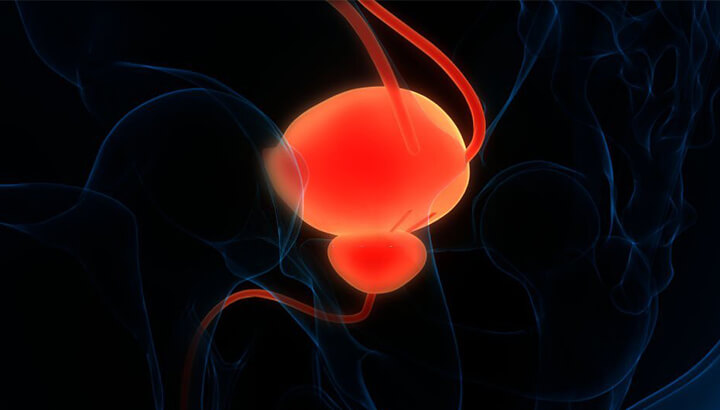
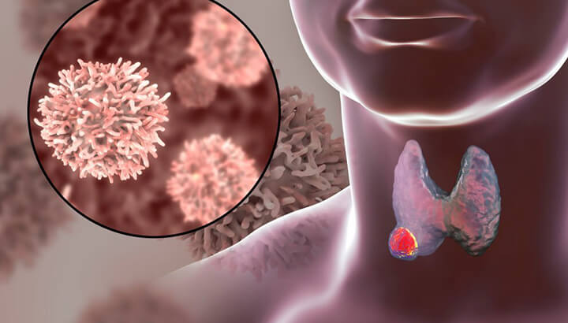

About Cancers
TYPES OF CANCER :
- Acute Leukemia
- Bone Cancer and Sarcomas
- Cervical Cancer
- Endometrial / Uterine Cancer
- Liver And Gall Bladder Cancer
- Myelodysplastic Syndromes
- Pancreatic Cancer
- Stomach and Esophageal Cancer
- Anemia, Thalassemia, Thrombocytopenias, ITP
- Brain Tumor
- Chronic Leukemia
- Kidney Cancer
- Lung Cancer
- Neuroendocrine Cancer
- Prostate Cancer
- Testicular Cancer
- Tongue and Buccal Mucosa Cancer
- Bladder Cancer
- Breast Cancer
- Colon and Rectal Cancer
- Larynx Cancer
- Multiple myeloma and plasmacytoma
- Ovarian Cancer
- Skin Cancer
- Thyroid Cancer
Cancer Treatments
Fighting Cancer
Second Opinion
Patient Stories
 +91
9154143858/59/60
+91
9154143858/59/60Acute Leukemia
Leukemia is a broad term for all types of cancers of the blood cells, including the cancers of the bone marrow cells and the lymphatic system. According to Globocan 2018, the worldwide incidence rate of leukemia in 2018 was 3.2 per 100,000 population. In India, about 42,055 new cases of leukemia were reported in 2018.
About acute leukemia
Acute leukemia refers to the rapidly progressing cancer that originates in the blood-forming tissues. This cancer causes the production of a large number of abnormal white blood cells; these cells are immature and non-functional and crowd out the mature, functional cells. Based on the type of white blood cells affected, acute leukemia can be classified as acute myelocytic leukemia (AML) and acute lymphocytic leukemia (ALL). In children, AML attributes to about 20% of all leukemias, and ALL accounts for 80% of leukemia cases.
Acute myelocytic/ myeloid/ myelogenous/ granulocytic/ non-lymphocytic leukemia (AML) is the cancer of the bone marrow (spongy tissue inside the blood, which produces blood cells) and blood. This cancer affects a type of white blood cell called myeloid cells. Normally, myeloid cells develop into different types of mature cells, like white blood cells, red blood cells, and platelets. In AML, the affected bone marrow produces a large number of these cells, which do not mature and hence, cannot fight infection.
Acute lymphocytic/ lymphoblastic/ lymphoid leukemia (ALL) also begins in the bone marrow and affects the lymphocytes, a type of white blood cells that produce antibodies, kill tumor cells and control immune responses. In ALL, too many immature lymphocytes are produced, which cannot fight infection. ALL is more common among children, and treatments have a success rate, but this is not the case in adults.
Causes / Risk factors
Acute leukemia may be caused by damage to the DNA of developing cells in the bone marrow. But it is not clear what causes these changes in the DNA. However, some risk factors can lead to ALL or AML, some of them are discussed below:
Age: The risk of AML increases with age; it mostly occurs in adults older than 65 years. But ALL is likely to occur in children and adults older than 50 years.
Gender: Males are more likely to develop AML and ALL than females.
Exposure to radiation and chemicals: Being exposed to high levels of radiation, like surviving a nuclear reactor accident, increases the risk of developing ALL as well as AML. Exposure to chemicals like benzene is associated with an increased risk of AML.
Previous cancer treatment: Individuals who have undergone chemotherapy and radiation therapy for other cancers are at a higher risk of both ALL and AML.
Genetic disorders: Some genetic disorders, such as Down’s syndrome, are linked with a greater risk of ALL and AML.
Blood disorders: Blood disorders, such as myelofibrosis, myelodysplasia, thrombocythemia, or polycythemia vera, are associated with an increased risk of AML.
Having a sibling or identical twin with ALL: Individuals who have a sibling or an identical twin who has been diagnosed with ALL are at an increased risk of this cancer.
Smoking: Both ALL and AML are associated with cigarette smoking.
Signs and symptoms
The symptoms of acute leukemia may vary based on the type of blood cell affected. However, most of the signs and Acute Myeloid Leukemia Symptoms of AML and ALL are similar, which include:
- Fever
- Lethargy and fatigue
- Bone pain
- Pale skin
- Shortness of breath
- Frequent infections
- Frequent nosebleeds
- Bleeding from the gums
But symptoms, such as easy bruising indicates AML, whereas lumps caused by swollen lymph nodes in the neck, underarm, abdomen, or groin are symptoms of ALL.
Diagnosis
If any type of acute leukemia is suspected, the following diagnostic tests may be recommended:5
Blood tests: Individuals with ALL or AML, usually have a large number of white blood cells, and fewer red blood cells and platelets. Immature cells present in bone marrow but not moving in the blood, also indicate AML or ALL.
Bone marrow test (BMT): A BMT is performed to confirm the diagnosis of leukemia. In this test, a sample of bone marrow is taken using a needle. Usually, the sample is taken from the hip bone or the breastbone, and sometimes from other bones. Laboratory analysis will help determine the origin of cancer and specific type of cancer, depending on the size, shape, and genetic or molecular features, essential for treatment planning.
Genomic testing: Genomic testing can help determine the genetic mutations, specific genes, chromosomal changes, and other features unique to the patient’s leukemia. This can help predict the prognosis and plan the treatment approach.
Lumbar puncture (or spinal tap): In this test, a small needle is inserted into the lower back into the spinal canal to obtain a sample of spinal fluid (the fluid that surrounds the brain and spinal cord). This test determines whether the leukemia cells have spread to the spinal fluid.
Lymph node biopsy: This test is done to diagnose other lymphomas and is rarely recommended for ALL patients, as the diagnosis is made with blood and bone marrow tests. In this test, a sample of the lymph node is removed through an incision, under local anesthesia. However, general anesthesia may be needed if the lymph node is in the deeper tissues of the body.
Imaging tests: Imaging tests such as CT scan, X-ray, MRI scan or ultrasound scan can help examine if cancer has spread to other parts of the body.
Staging/ Subtypes of AML and ALL
AML and ALL are not staged like other types of solid tumors. These cancers are usually spread across the bone marrow and sometimes to other organs, by the time it is diagnosed. Hence, the prognosis of the patient depends on the subtype of AML or ALL, the patient’s age, and other laboratory test results.
Knowing the subtype of ALL or AML is essential to planning the treatment and obtaining the best possible outcomes.
- AML is classified as follows, according to the World Health Organization (WHO):
- AML with certain genetic abnormalities (gene or chromosome changes)
- AMLwith myelodysplasia-related changes
- AMLrelated to previous chemotherapy or radiation
- AMLnot otherwise specified
- Myeloid sarcoma (or granulocytic sarcoma or chloroma)
- Myeloid proliferations related to Down syndrome
- Undifferentiated and biphenotypic acute leukemias (have both lymphocytic and myeloid features)
The WHO system divides ALL into several groups:
B-cell ALL
- B-cell ALL with certain genetic abnormalities (gene or chromosome changes)
- B-cell ALL, not otherwise specified
T-cell ALL
- Early T-cell precursor lymphoblastic leukemia
Mixed lineage acute leukemias
This group has both lymphocytic and myeloid features in the same or different cells.
Treatment
The treatment of ALL and AML depends on various factors, like subtypes of cancer, age, the overall health of the patient, and their preferences.
In general, treatment of AML can be categorized into two phases:
Remission induction therapy: This phase aims to kill the leukemia cells in the blood and bone. Usually, in this phase all the leukemia cells are not wiped out, hence further treatment will be required to prevent cancer recurrence.
Consolidation therapy (maintenance therapy, post-remission therapy, or intensification): This treatment phase aims to destroy the remaining leukemia cells and reduce the risk of relapse.
Along with these two phases, ALL treatment is categorized into two more phases:
Maintenance therapy: This phase prevents leukemia cells from re-growing. In this phase, the treatment is provided at much lower doses over a long period.
Preventive treatment to the spinal cord: During each treatment phase, ALL patients may receive additional treatment to kill leukemia cells in the central nervous system. For this, usually, chemotherapy drugs are directly injected into the spinal fluid.
Following are the therapies used for the treatment of AML and ALL:
Chemotherapy: It involves giving drugs to kill the cancer cells in the body. These drugs are administered either intravenously or given orally in cycles. This therapy can be given as an induction therapy for children (in case of ALL) and adults, as well as the consolidation and maintenance phases. Patients with AML may have to stay in the hospital while receiving chemotherapy, as the drugs destroy several normal cells, causing undesirable effects.
Targeted therapy: This therapy uses drugs that target the specific abnormalities of the cancer cells, which help them grow. This therapy may be combined with or given after chemotherapy.
Radiation therapy: Radiation therapy involves delivering high-powered beams, such as protons or X-rays, to kill cancer cells. This therapy is recommended when the cancer cells have spread to the central nervous system.
Bone marrow transplant (or stem cell transplant): In this treatment, the unhealthy bone marrow is surgically replaced with leukemia-free stem cells, that would produce healthy bone marrow. This transplant is performed after giving high doses of radiation therapy or chemotherapy to destroy the leukemia-producing bone marrow. This treatment approach may be used as consolidation therapy.
Prevention
Currently, there is no definite way to prevent leukemia, as most individuals with acute leukemia do not have known risk factors. However, quitting smoking offers a chance to reduce an individual’s risk of AML. Cancer-causing chemicals, such as benzene must be avoided, which can lower the risk of AML.
Prognosis
The chance of recovering from ALL and AML depends on several factors, including mutations, patient’s age, general health, a subtype of leukemia, response to treatment, etc. However, the survival rate of AML is about 28.3% and ALL is about 68.60%. An early diagnosis and proper treatment tend to improve the outlook.
References:
- What Is Acute Myeloid Leukemia (AML)? American Cancer Society. https://www.cancer.org/cancer/acute-myeloid-leukemia/detection-diagnosis-staging/how-classified.html. Accessed on 02 September 2020.
- Acute myelogenous leukemia. Mayo Clinic. https://www.mayoclinic.org/diseases-conditions/acute-myelogenous-leukemia/diagnosis-treatment/drc-20369115. Accessed on 02 September 2020 .
- Acute lymphocytic leukemia. Mayo Clinic. https://www.mayoclinic.org/diseases-conditions/acute-lymphocytic-leukemia/symptoms-causes/syc-20369077 . Accessed on 02 September 2020.
- What Is Acute Lymphocytic Leukemia (ALL)? American Cancer Society. https://www.cancer.org/cancer/acute-lymphocytic-leukemia/about/what-is-all.html . Accessed on 02 September 2020.
- India Source: Globocan 2018. International Agency for Research on Cancer, World Health Organization. https://gco.iarc.fr/today/data/factsheets/populations/356-india-fact-sheets.pdf . Accessed on 02 September 2020.
- Acute leukemia. NIH National Cancer Institute. https://www.cancer.gov/publications/dictionaries/cancer-terms/def/acute-leukemia . Accessed on 02 September 2020.
- Types of Leukemia. UPMC Children's Hospital of Pittsburgh. https://www.chp.edu/our-services/cancer/conditions/leukemia/types. Accessed on 02 September 2020.
- Leukemia: Outlook / Prognosis. Cleveland Clinic. https://my.clevelandclinic.org/health/diseases/4365-leukemia/outlook--prognosis . Accessed on 02 September 2020.
Bone Cancer and Sarcomas
Bone cancers and sarcomas are rare and heterogeneous groups of tumors that arise predominantly from the connective tissues. Globally, they account for less than 1% of all cancers. These cancers usually affect children and young adults more than the older population. According to the National Cancer Registry Programme of the India Council of Medical Research (ICMR), the incidence of bone cancer is below 2 % of all cancers among the Indian population, while sarcomas are the fifth most common solid tumors in children, and account for about 6-7% of all childhood malignancies.
Bones and Soft tissues
Bones are the supporting framework of our body which facilitates movement, protection of internal organs, and hematopoiesis (formation of blood cellular components). Soft tissues are the extra-skeletal tissues of the body that surround organs and other anatomic structures like tendons, the lining of the joints, muscles, fats, and blood vessels.
Sarcoma and bone cancers arise from the embryonic mesenchymal cells that mature into muscles, adipose tissue, bone, and cartilage among other tissues.
Bone Cancer
Bone cancer develops when the healthy cells in the bone grow uncontrollably and form a mass called a tumor. As the tumor develops, abnormal cells crowd out the healthy ones. These tumors weaken the bone and make it vulnerable to fracture. The tumors can be malignant (cancerous, spread to other parts of the body) or benign (non-cancerous, do not spread to nearby tissues).
Types of bone cancer
There are mainly two types of bone cancer:
- Primary bone cancer- cancer that starts in the bone.
- b Secondary bone cancer- cancer that starts in another part of the body and spreads to the bone (metastatic bone cancer).
Primary cancers are the true bone cancers; the different kinds of primary bone cancers are:
- Osteosarcoma: Originates from the bone-forming cells called osteoblasts in the osteoid tissue (immature bone tissue). They occur most often in the arms, legs, and pelvis.
- Chondrosarcoma: Originates in the cartilage and mainly affects the pelvis, legs, and arms. Middle-aged and older adults are more likely to develop this cancer.
- Ewing's sarcoma: Occur mostly in the bones of the pelvis, legs, or ribs. These are aggressive and spread to other parts of the body, including the lungs.
- Chordoma: Usually seen in the spine and base of the skull. They tend to grow slowly and rarely spread to other parts of the body.
Bone marrow cancer symptoms and signs:
- Dull aching pain that worsens at night and with activity
- Joint swelling and stiffness
- Limping
- Bone fracture
Other less common bone cancer symptoms are fever, a feeling of being unwell, unintentional weight loss, and anemia (low level of red blood cells).
Causes and Risk factors
The exact cause of the bone tumors is unknown. Researchers believe that bone cancer may develop due to sudden changes in the cells of the bone. Additionally, some factors may increase the risk of bone cancer, and include:
- A prior history of other cancers like breast, lung, prostate, kidney, or thyroid cancer
- Paget's disease (a noncancerous bone condition)
- Injury to a bone causing chronic infection
- Some inherited conditions such as retinoblastoma (eye cancer that begins in the retina), Li-Fraumeni syndrome (inherited familial disorder)
- History of radiation therapy
- Exposure to certain chemicals
Diagnosis
If any sign or symptom in a patient raises the suspicion of bone cancer, the following tests are recommended:
- Blood tests: The presence of certain markers such as alkaline phosphatase and lactate dehydrogenase in the blood indicates cancer.
- Imaging studies: These tests help to determine the location, size of bone tumors, and the extent of the tumor, and include:
- X-ray: X-rays create pictures of the dense structures like bones inside the body. Cancer may make the bone appear different from a healthy bone on an X-ray.
- Bone scan: This uses radioactive tracers to view the insides of the bones. These traces get accumulated in areas of the bone and show the changes or abnormalities in the bones.
- Other imaging studies: In some cases, magnetic resonance imaging (MRI), computerized tomography (CT), or positron emission tomography (PET) scans are performed to help evaluate the tumor further.
- Biopsy: A biopsy involves collecting a sample of tissue from the suspected area and examining it in the laboratory to determine any abnormalities. A needle biopsy or incisional biopsy is performed depending on the location of the tumor.
Stages of bone cancer
The cancer staging is done followed the TNM staging system. It provides detailed information about:
- Tumour (T): Size and extent of tumor
- Node (N): Whether cancer has spread to the surrounding lymph nodes
- Metastasis (M): Whether cancer has spread to distant parts of the body
Based on TNM staging, bone cancer can be in any of the following stages:
- Stage I: The cancer is low-grade and is either smaller or larger than 8cm. The tumor is limited to the bone and has not spread to the surrounding tissue of the bone.
- Stage II: The cancer is medium or high-grade and is either smaller or larger than 8cm. It has not spread to the surrounding tissue of the bone.
- Stage III: The cancer is medium or high-grade and is found in more than one place on the same bone. It has not spread to any lymph node or other parts of the body.
- Stage IV: Cancer cells are of any size or grade and have spread to the lymph nodes and distant parts of the body like the brain, liver, or lungs.
Treatment
Treatment options for bone cancer usually depend on several factors, including the type, stage of cancer, possible side effects, and the overall health of the patient.
Treatment modalities available for bone cancer are:
- Surgery: Surgery is an appropriate treatment option for all types of bone cancer. It involves the removal of the tumor and some surrounding healthy tissues. The common types of surgeries include:
- Limb salvage surgery: In this method, the cancerous section of the bone is removed while leaving the nearby muscles, tendons, nerves, and blood vessels intact.
- Amputation: In this method, a part of the entire affected limb (arm or leg) is removed.
- Cryosurgery: It is a type of ablation to destroy the cancerous tissues using cold temperature. During the procedure, a very cold metal probe is placed directly on the site of the tumor to kill the abnormal cells.
- Chemotherapy: It involves the use of drugs to destroy rapidly growing cancer cells in the body. These drugs interfere with the process of cell division and promote cancer cell death. For bone cancer, chemotherapy is administered along with radiation therapy or after surgical procedures to enhance its effect. It is an important part of treatment for osteosarcoma and Ewing’s sarcoma.
Some side effects of chemotherapy are nausea, hair loss, weight loss, and extreme fatigue.
Radiation Therapy: It involves using high-energy beams like X-rays, gamma rays, and electron beams to shrink and destroy tumors. For bone cancer, radiation therapy can be given alone or in combination with chemotherapy or after surgery to ease the symptoms and prevent the recurrence of cancer.
Side effects from radiation therapy may include mild skin reactions, fatigue, nausea and vomiting, diarrhea, and weight loss.
Targeted Therapy: This therapy involves the use of drugs that interfere with genes or proteins that contribute to the growth and survival of cancer cells, thereby destroying the cancer cells. These are different from chemo drugs and have minimal side effects.
SARCOMAS
A sarcoma occurs when healthy cells in the soft tissues and other locations undergo a change and start to grow out of control, which slowly forms a mass or lump called a tumor. The tumors can be benign (non-cancerous, do not spread to nearby tissues) or malignant (cancerous, spread to other parts of the body).
The tumors that originate within the soft tissues are called primary cancers while those cancers that start in another part of the body and spread to the soft tissues are called secondary tumors.
Signs and Symptoms
Sarcomas are usually asymptomatic during the early stage. As the sarcomas originate in different locations, the signs and symptoms vary depending on the location of the tumor. A lump or swelling which may or may not cause pain is usually the first sign of sarcoma.
Other possible osteosarcoma symptoms include:
- Abdominal pain that worsens
- Blood in stool or vomit
- Bone fracture and pain
- Skin lesions
- Abnormal vaginal bleeding
Bone Cancer Causes and Risk factors
The exact cause of soft tissue sarcoma is not clear. Generally, errors in the DNA cause the cell to divide at an uncontrollable rate, forming tumors.
Other risk factors that can increase the risk of sarcoma include:
- Specific inherited disorders such as Von Recklinghausen’s disease, Li-Fraumeni syndrome, or retinoblastoma
- Being exposed to the chemicals
- History of radiation therapy
- Having a weak immune system
- Damaged lymph system( lymphedema)
Diagnosis
There are no screening tests that can detect sarcomas in their early stages. If a person experiences any possible sign or symptom of sarcoma, the following tests are recommended.
- Imaging tests: Tests such as computerized tomography (CT), magnetic resonance imaging (MRI) scan, chest X-ray, bone scan, and angiography are done to examine any suspicious area to learn how far cancer may have spread.
- Biopsy: Biopsy can help make a definite diagnosis of sarcoma. It involves the removal of some tumor tissues from the suspicious area using a needle guided by CT or MRI scanning. The sample is analyzed under a microscope to determine if it is cancerous or benign.
- Tissue testing of the tumor: These laboratory tests will help to identify specific genes, proteins, and other factors unique to the tumor.
Stages of sarcoma
Sarcomas are also staged based on the TNM staging system. Based on this system, the sarcomas can be in the following stages:
- Stage I: The cancer is low-grade and is either less than or larger than 5 cm across. It has not spread to the lymph nodes or other parts of the body.
- Stage II: The cancer is medium or high-grade and is either 5 cm or larger than 5 cm across. It has not spread to the lymph nodes or other parts of the body.
- Stage III: The cancer is high-grade and larger than 5 cm across and has not spread to the lymph nodes, OR the cancer is of any size or grade, but it has spread to the lymph nodes and not to other parts of the body.
- Stage IV: The cancer is any size or grade and may have spread to the lymph nodes and distant parts of the body like the lungs and liver.
Bone Cancer Treatment
The treatment method for soft tissue cancer is based on the location, type, and stage of sarcoma, possible side effects, and overall health of the patient. The major treatment modalities include:
Surgery: Surgery is the mainstay and involves the surgical removal of the entire tumor. In rare cases, where the tumor is large and involves major blood vessels and nerves, the whole tumor is removed to control its spread (amputation). This is common in arms and limbs.
Radiation therapy: Radiation therapy may be used before the surgery (neoadjuvant therapy) to shrink the tumor or after the surgery (adjuvant therapy) to destroy any remaining cancer cells.
Radiations can be given through an external machine or can be delivered by placing a radiation source near the site of the tumor (internally). In some cases, intraoperative radiation is performed during surgery to protect the nearby healthy tissues.
Common side effects of radiation therapy include fatigue, headaches, memory loss, and scalp irritation.
Chemotherapy: Chemotherapy is the use of drugs to destroy rapidly growing cancer cells in the body. Chemo drugs are injected into a vein (IV) or given orally. For sarcomas, chemotherapy is given as the main treatment or after the surgical procedures to enhance its effect.
Common side effects of chemotherapy include nausea, vomiting, fatigue, and hair loss.
Targeted therapy: It involves the use of specific drugs to identify and destroy the specific cancer cells without harming the normal cells. The targeted drugs work differently from standard chemo drugs and offer minimal side effects.
Outlook
Although there is no way to prevent bone cancer and sarcomas, early diagnosis and timely treatment can help improve mortality and morbidity. For those with a known risk factor, a regular checkup can help in the early detection of cancer. Patients with early-stage tumors have the best chance of long-term survival. Once the active treatment is completed, regular checkups and medications are needed to manage the side effects and maintain overall well-being.
Cervical Cancer
Cervix cancer is one of the top gynecologic cancers worldwide. According to current data, it is fourth-ranked cancer among women that results in over 3,00,000 deaths worldwide. It is mainly caused by certain strains of human papillomavirus (HPV).
Research showed that 90% of cervical cancers occur in low-income and middle-income countries that fail to organize proper screening and HPV vaccination programs. As per Globocan 2018, cervical cancer is the second most common cancer among Indian women.
About cervical cancer
The cervix is the lower part of the uterus that connects the vagina (birth canal) and uterus. It acts as a passage for menstrual blood and secretes mucus to lubricate the female reproductive tract.
Cervical cancer occurs when the normal cells of the cervix undergo mutations and begin to grow out of control. These abnormal changes in the cells can initially lead to a pre-cancerous stage. In some cases, these pre-cancerous cells of the cervix turn into invasive cancers that may spread to other parts of the body and can be fatal.
Types of cervical cancer:
The main types of cervical cancers are:
- Squamous cell carcinoma: It accounts for 85 to 90 percent of cervical cancers. This cancer begins in the squamous cell lining the outer part of the cervix (exocervix).
- Adenocarcinomas: These cancers develop from glandular cells of the endocervix (the cervical opening that leads to the uterus).
- Adenosquamous carcinomas: These cancers are rare and have features of both squamous cell carcinomas and adenocarcinomas.
Signs and symptoms of cervical cancer
Cervical cancer is usually asymptomatic during the early stage. As cancer begins to grow then the woman might experience the following symptoms:
- Unusual bleeding, such as in between periods, after sex, or after menopause
- An unusual discharge from the vagina
- Pain in the pelvic region
- Pain during sexual intercourse
- Pain during urination
Advanced stage cervical cancer may cause the following symptoms:
- Swelling of the legs
- Problem while urinating or during a bowel movement
- Blood in the urine
Causes/ Risk Factors
Most cervical cancers are caused by human papillomavirus (HPV). However, not all HPV infections lead to cervical cancer.
HPV viruses are usually transmitted between people through skin-to-skin contact. It can be passed through sexual contact and can affect cells on the surface of the mucus membrane lining the genitals, anus, mouth, and throat. They manifest with visible warts on the genitals or surrounding skin.
Factors that might increase the risk of cervical cancer include the following:
- Exposure to the drug diethylstilbestrol (DES) while in the mother's womb
- Having three or more children
- Smoking
- Oral contraceptive use for a long time
- Multiple sexual partners
- A weak immune system
- Past or current history of sexually transmitted infections (STIs)
- Sexual activity and/or pregnancy at a young age
- Family history of cervical cancer
Diagnosis
Regular screening is the only way to detect cervical cancer. Cervical screening can be done by HPV test and the Pap test.
- HPV test: This test involves collecting and examining cells from the cervix to identify the HPV strains that are most likely to cause cervical cancer.
- Pap test: This test involves inserting a brush or spatula inside the cervix to collect a sample of cells from the cervix. The sample is examined in a laboratory to check for any abnormalities.
Some more tests are recommended if the results of the HPV test and Pap test are abnormal. Initially, the signs and symptoms, medical history, and family history of the patient are reviewed. A complete physical examination is performed to evaluate the overall health of the patient followed by a detailed pelvic examination. If cervical cancer is suspected, a colposcopy may be scheduled.
- Colposcopy: In this procedure, a small colposcope (a thin flexible tube with a video camera at the end) is inserted through the wall of the vagina. The camera would then transmit the real-time images of the vagina and cervix on the monitor. During the colposcopic examination, the doctor may perform a cervical biopsy for a detailed diagnosis.
- Biopsy: It is performed along with colposcopy. The procedure involves inserting special tools through the colposcope to collect the sample of tissue. These tissues are further examined in the laboratory to check for any abnormalities.
Stages of cervical cancer
The staging for cervical cancer includes:
- Stage I: The cells have grown from the surface of the cervix into deeper tissues of the cervix. It has not spread to nearby lymph nodes or distant sites.
- Stage II: Cancer has spread beyond the cervix and uterus, but is still inside the pelvic area. It has not spread to nearby lymph nodes or distant sites.
- Stage III: Cancer has spread to the lower third of the vagina, and/or has spread to the pelvic wall. It may cause kidney problems and involves regional lymph nodes.
- Stage IV: Cancer has spread to distant parts of the body, such as the lungs.
Cervical Cancer Treatment
The following modalities of cervical cancer treatment by stage are recommended:
- Surgery: It is the mainstay of treatment for cervical cancer. Depending upon the size and stage of cancer, the surgeon may recommend any of the following surgeries:
- Cryosurgery: It is a type of ablation to destroy the cancerous cervical tissues at cold temperatures. During the procedure, a very cold metal probe is placed directly on the cervix to kill the abnormal cells by freezing them.
- Laser ablation: It is a type of ablation method that uses a laser beam to destroy cancerous tissues. It is performed under local anesthesia. In this procedure, an intense laser beam is passed through the vagina to vaporize abnormal cells.
- Conization: It is recommended both as a diagnostic tool and treatment modality. Here, a cone-shaped piece of tissue from the cervix and cervical canal is removed.
- Hysterectomy: It is recommended during early-stage cervical cancer. This procedure involves the removal of the cervix and uterus. Hysterectomy can either be simple or radical. A simple hysterectomy involves the removal of the uterus and cervix while a radical hysterectomy involves the removal of the uterus, cervix, upper vagina, and the tissue around the cervix.
- Trachelectomy: It involves the removal of the whole cervix to completely remove cancer.
- Radiation therapy: It involves the usage of high-energy X-ray beams to kill cancer cells. Depending on the stage, radiation therapy can be given alone or combined with chemotherapy for cervical cancer or might be administered after the surgery. Radiation therapy can be given externally through an external machine or it can be delivered internally by placing a radiation source near the vagina or cervix.
- Chemotherapy: It involves the use of drugs to kill or stop the growth of cancer cells. The drugs are usually taken orally or injected into the vein or muscles. Chemotherapy is administered in combination with radiation therapy for cervical cancer to enhance its effect.
Common drugs used for chemotherapy include:
- Carboplatin
- Cisplatin
- Paclitaxel
- Fluorouracil
- Cyclophosphamide
Targeted therapy: It involves the use of specific drugs or other substances to identify and destroy the cancer cells without harming the normal cells. Drugs approved for the treatment of cervical cancer include bevacizumab.
Immunotherapy: It involves the use of certain medicines to boost a person’s immune system to find and destroy the cancer cells. It is used to treat advanced-stage cervical cancer and to prevent its recurrence. The drug approved for the treatment of cervical cancer is pembrolizumab.
Prevention of cervical cancer
In addition to getting screened regularly and receiving HPV vaccination follow these steps to prevent cervical cancer:
- Delaying first sexual intercourse until the late teens or older
- Avoiding sexual intercourse with multiple partners
- Practicing safe sex by using condoms
- Smoking cessation
Outlook
Cervical cancer is one of the most preventable and treatable cancers. When diagnosed at an early stage, the five-year cervical cancer survival rate is 92%, while it drops to 56% when diagnosed at an advanced stage. Additionally, routine screening and HPV vaccination improve the cervical cancer prognosis of women. Cancer diagnosed at late stages can also be controlled with appropriate treatment and palliative care.
Endometrial / Uterine Cancer
Endometrial cancer is the sixth most common cancer among women worldwide and the 15th most common cancer, in general. In 2018, over 382,069 new cases were recorded and 89,929 deaths attributed to endometrial cancer worldwide.
Moreover, it is the second most common gynecological cancer and is considered the fourth leading cause of death. The worldwide incidence rate for endometrial cancer is rapidly increasing, and it is estimated to increase by more than 50% by 2040.
Brief overview
Uncontrolled growth of cells in the innermost lining of the uterus (endometrium) is known as uterine/endometrial cancer. It refers to cancer that starts in the uterus and is different from the cancer of the uterine muscle (sarcoma). It is the most common type of cancer in the uterus. About 2-3% of women may develop it in their lifetime, especially during post-menopause.
Uterus Cancer Causes or Risk factors
The exact cause of endometrial cancer is unknown. However, medical experts believe that changes in hormone levels such as estrogen and progesterone may lead to endometrial cancer. Listed below are some of the factors that increase the chance of developing endometrial cancer:
- Early first period
- Starting menopause at a later age
- Irregular menstruation
- Never having given birth
- Older age
- Infertility
- Obesity
- Diabetes
- High blood pressure
- Family history of endometrial or colorectal cancer
- Medical history of breast cancer, ovarian cancer, or cystic endometrial hyperplasia
- Past pelvic radiation therapy
Signs and symptoms
Early detection of endometrial cancer improves the chances of successful treatment. The majority of women with endometrial cancer have an abnormal bleeding that helps in early detection. However, in certain cases, endometrial cancers may progress into an advanced stage before causing signs and symptoms.
The symptoms of endometrial cancer may include:
- Abnormal vaginal bleeding between periods or after menopause
- Abnormal vaginal discharge
- Pelvic pain or feeling a mass
- Painful urination
- Pain during sexual intercourse
- Unexplained weight loss
Diagnosis
Any symptoms related to endometrial cancer, such as abnormal vaginal bleeding should be informed to the doctor right away, as early diagnosis can improve cancer outcomes. Following are the tests involved in the diagnosis of endometrial cancer.
Medical history: The patient’s medical history related to past illnesses and treatments are obtained. Details about the patient’s general health, risk factors (if any), and specific signs related to endometrial cancer are analyzed.
Physical examination: Physical examination includes a pelvic exam, where the abnormalities in the uterus and cervix, are assessed for.
Other tests and procedures used to diagnose endometrial cancer include:
Ultrasound: During the transvaginal ultrasound, a probe is inserted into the vagina, which creates images of the uterus using high-energy sound. It helps in the treatment of thickened endometrium to analyze texture. It also enables checking for the presence of abnormalities related to the uterine lining and tumors.
Hysteroscopy: During hysteroscopy, a thin flexible tube with a light source, known as a hysteroscope is inserted into the vagina. It helps to examine the uterus and endometrium for abnormalities. Sometimes, an endometrial biopsy can also be performed during hysteroscopy, where a small tissue sample is obtained from the endometrium and sent for histological analysis. Local anesthesia may be given before the procedure to reduce pain or discomfort during the procedure.
Dilation & curettage (D&C): D&C is recommended when the sample procured during the endometrial biopsy is insufficient or if the biopsy results are unclear. D&C is usually performed as an outpatient procedure under local or general anesthesia. During the procedure, the opening of the cervix is dilated (widened) and a curette (spoon-shaped instrument) is used to scrape the tissue from the lining of the uterus and examined it under the microscope for abnormal cells. The histological studies help to confirm the diagnosis and provide details about the grade and type of endometrial cancer. When the cancer is suspected to have advanced to other body parts, further tests may be recommended that involve determining the extent of spread and cancer stage. They may include chest x-ray, computed tomography (CT), magnetic resonance imaging (MRI), and positron emission tomography (PET).
Endometrial cancer staging
Depending on the size and spread of the tumor, endometrial cancer is classified into four stages.
- Stage I uterine cancer: The cancer is confined to the uterus.
- Stage II: Cancer has spread to the cervix, but not outside the uterus.
- Stage III: Cancer has spread outside the uterus and cervix, but not beyond the pelvis. It might spread to the fallopian tubes, ovaries, vagina, ligaments of the uterus, and nearby lymph nodes.
- Stage IV: Cancer has spread beyond the pelvis into the bladder, bowel, and/or other distant parts of the body.
Treatment
The treatment plan and the long-term outlook depend on the cancer stage. Endometrial cancer is often diagnosed at an earlier stage due to persistent abnormal bleeding. With early diagnosis and prompt medical intervention, endometrial cancer can be treated easily with better outcomes.
The common types of treatments for endometrial cancer include:
brEndometrial Surgery
Surgery is the most common treatment for endometrial cancer. It involves removing the uterus and other affected areas.
Total hysterectomy: Total hysterectomy involves removing the uterus along with the cervix. The surgery can be performed through the vagina (vaginal hysterectomy), large incision in the abdomen (total abdominal hysterectomy), or through a small incision in the abdomen (total laparoscopic hysterectomy).
Radical hysterectomy: It involves the surgery to remove the entire uterus along with the immediate ligaments (parametrium and uterosacral ligaments) and the upper part of the vagina.
Surgeries that may be performed along with hysterectomy include:
- Salpingo-oophorectomy: It is a surgery to either remove one ovary and fallopian tube (unilateral) or both ovaries and both fallopian tubes (bilateral).
- Lymphadenectomy: It is a surgery to remove one or more lymph nodes from the pelvic region and evaluate it for the presence of cancer.
Radiation therapy for endometrial cancer
Radiation therapy uses high-energy beams to destroy the cancer cells and can be delivered from outside the patient’s body, known as external beam radiation therapy. When the radiation is delivered through a radioactive source placed inside the vagina, it is called brachytherapy.
In some cases, radiation therapy may be recommended to reduce the chances of cancer recurrence after the surgery. It may also be administered before the surgery to shrink the tumor, enabling easy removal. Radiation therapy alone is also used as the treatment for patients who cannot undergo surgery.
Chemotherapy
Chemotherapy uses anti-cancer drugs to destroy cancer cells. Many chemotherapy drugs are available and often they are given in combinations. It can be received orally or intravenously, where the drugs enter the bloodstream and reach the cancer cells to destroy them (systemic chemotherapy). The drugs can also be placed directly in the body cavity to target the cancer cells in the affected area (regional chemotherapy). Sometimes, chemotherapy may be recommended after the surgery to decrease the risk of cancer recurrence or to shrink the size of the tumor before surgery. It is often used to treat advanced or recurrent endometrial cancers.
Hormone therapy
Hormone therapy involves changing the levels of certain hormones in the body. This could impact the cancer cells that depend on such hormones for their growth, thereby arresting their growth. During endometrial cancer, the hormones affected are estrogen and progesterone and the drugs that control these hormones help the cancer cells to shrink and die.
Targeted therapy
Targeted therapy uses certain drugs to specifically identify and target cancer cells, without affecting normal cells. Monoclonal antibodies, mTOR inhibitors, and signal transduction inhibitors are three types of targeted therapy used to treat endometrial cancer. Often, targeted therapy is used in combination with chemotherapy to treat advanced endometrial cancers.
Immunotherapy
Immunotherapy helps boost the immune system to recognize and destroy cancer cells. It can be used to treat endometrial cancers that have spread to other parts or when other treatments fail to confer protection.
Prevention
Endometrial cancer is not preventable; however, certain measures may help to reduce the risk. They include:
- Maintaining a healthy weight
- Being physically active
- Using birth control pills
- Discussing with the doctor the risks of hormone therapy after menopause
- Obtaining appropriate treatment for endometrial problems
Prognosis
The prognosis of endometrial cancer depends on its type and stage. However, the prognosis for endometrial cancer is usually good due to early diagnosis, as it often leads to abnormal vaginal bleeding. The majority of women with endometrial cancer are successfully cured with surgery. The over20-year year survival rate is about 80% and the five-year year survival rate ranges from 74% to 91%. Recurrences are usually expected within the first three years after treatment.
Liver and Gall Bladder Cancer
Liver and gallbladder cancer is a common and aggressive malignancy of the hepatic biliary system. Liver cancer is the fourth leading cause of cancer mortality and is ranked the sixth most diagnosed cancer worldwide. However, gallbladder cancer is rare and accounts for 1.2% of all cancer diagnoses globally. The incidence of these cancers is increasing and there is a higher prevalence in developing countries.
About Liver and Gallbladder
The liver and gallbladder are two accessory organs of the gastrointestinal tract. The liver is located under the diaphragm in the upper right portion of the abdomen. It aids in digestion and hemostasis. The liver secretes bile - a yellowish-green fluid that emulsifies fats. The excess bile is stored in a small sac-shaped organ – the gallbladder which is located below the liver. The liver and gallbladder are interconnected by ducts. When the cells in the liver or gallbladder undergo DNA changes (mutations), it may cause abnormal cell growth, leading to cancers.
Liver cancer
Liver cancer (or hepatic cancer) arises when the healthy cells in the liver undergo mutations in their DNA and grow out of control to form a mass or sheet of cells called a tumor. These tumors can be malignant (cancerous, spread to other parts of the body) or benign (non-cancerous, do not spread to nearby tissues).
Types of liver cancer
Liver cancer can be classified into two:
- Primary cancer begins in the tissue of the liver.
- Secondary cancer also known as metastatic cancer begins in other parts of the body and spread to the liver. Metastatic tumors are more common than primary tumors.
Signs and symptoms
Liver cancer in the early stage generally has no signs or symptoms. As cancer grows and spreads to nearby tissue the following symptoms can be observed:
- Enlarged liver and spleen
- Painful or painless hard lump under ribs on the right side of the body
- Yellowing of skin and eyes (jaundice)
- Unexplained weight loss
- Nausea
- Loss of appetite
- Upper abdominal pain
- Bloating
Causes/Risk factors
The precise cause of liver cancer is not known. However, certain factors can increase the risk of developing liver cancer. These include:
- Long-term hepatitis B or C infection
- Cirrhosis and long-term alcohol abuse
- Exposure to carcinogens
- History of non-alcoholic fatty liver disease
- Smoking
- Obesity
- Type-II diabetes
- Increased intake of anabolic steroids
- A family history of other liver diseases
Diagnosis
If a person experiences any signs or symptoms of liver cancer, the following tests may be recommended:
A Blood tests: These tests help to diagnose liver function abnormalities.
- Liver function tests: These tests check for abnormal levels of proteins, liver enzymes, and bilirubin in the blood.
- Serum marker test: Markers are proteins secreted by cancer cells, whose presence in blood indicates cancer. An elevated level of alpha-fetoprotein (AFP) in blood indicates liver cancer.
Imaging tests: Tests such as ultrasound, computerized tomography (CT) scan, and magnetic resonance imaging (MRI) provide detailed information about the size and spread of cancer. An angiogram is performed to examine the blood vessels that supply blood to the tumor.
Biopsy: It involves the removal of tumor tissues using specialized needles for detailed examination. It is the most reliable way to determine cancer.
Stages
The liver cancer staging is done using the TNM staging system. It provides detailed information about:
- Tumour (T): Whether the primary tumor has grown through the liver
- Node (N): Whether cancer has spread to the surrounding lymph nodes
- Metastasis (M): Whether cancer has spread to distant parts of the body
Based on this system, liver cancer stages are as follows:
- Stage I: Single tumor confined to the liver and has not spread to nearby lymph nodes or distant sites.
- Stage II: Either a single tumor larger than 2cm that has spread to blood vessels OR several small tumors that all remain in the liver
- Stage III: More than one tumor confined to the liver, with one tumor larger than 5 cm OR one tumor that has spread to a major branch of a large vein of the liver
- Stage IV Liver Cancer: Single tumor or multiple tumors that have spread to distant parts of the body like bones, lungs
Liver Cancer Treatment
Once liver cancer is diagnosed, a customized treatment plan is created based on the stage of cancer at the time of diagnosis and the overall health of the liver. Treatments for liver cancer include:
Surgery: The tumor and some surrounding healthy tissue are removed by surgical procedures. Surgery improves the chance of recovery for patients with early-stage liver cancer. Surgical approaches include:
- Partial hepatectomy: This involves the removal of a portion of the liver, ranging from a smaller wedge to an entire lobe. It is recommended for stage I cancer.
- Liver transplantation: This involves removal of the whole liver and replacing it with a healthy one from an organ donor. It is an option for those tumors that cannot be removed with surgery.
Possible side effects are bleeding, infections, blood clots, and rejection of new liver.
Ablation therapy: This therapy involves non-surgical methods to destroy the tumors without removing them and is recommended for the elderly or patients with serious conditions, where surgery cannot be considered. The procedure involves placing a needle or probe directly into the liver tumor to destroy them. Based on the methods used to destroy the cancer cells, it is classified into:
- Radiofrequency ablation
- Percutaneous ethanol (alcohol) ablation
- Cryotherapy
- Microwave ablation
Embolization Therapy: Embolization is a procedure in which certain substances are injected directly into the blood vessels in the liver to block or reduce the blood flow to a tumor in the liver. Sometimes, the procedure is combined with chemotherapy (called chemoembolization) or radiation (radioembolization) for better outcomes.
Possible complications after the procedure are abdominal pain, fever, nausea, liver infections, and blood clots in the main blood vessels.
Targeted therapy: This therapy uses drugs that interfere with genes or proteins that contribute to the growth and survival of cancer, and thereby destroy the cancer cells. These are different from chemo drugs and have minimal side effects.
Chemotherapy: It involves the use of specific oral or intravenous drugs to kill cancer cells. It is recommended for patients who cannot undergo surgery or have not responded to local therapies or targeted therapy. Chemotherapy is usually given in cycles and the patient may receive a single or a combination of drugs.
Common side effects include fatigue, nausea, vomiting, loss of appetite, hair loss, and diarrhea.4
Radiation therapy: High-energy radiations like X-rays are used to destroy tumor cells. It is not considered for patients with severe liver damage due to hepatitis or cirrhosis.
For liver cancer, stereotactic body radiation therapy is used. This method delivers high doses of radiation to a tumor while limiting the amount of radiation to nearby healthy tissue.
Major side effects may include mild skin reactions, fatigue, loss of appetite, nausea and vomiting, diarrhea, and weight loss.
Immunotherapy: This uses drugs that direct the body’s immune system to kill cancer cells. For liver cancer, drugs like atezolizumab, pembrolizumab, nivolumab, and ipilimumab are used to attack cancer cells by boosting the natural defense of the immune system.
Gallbladder Cancer
Gallbladder cancer occurs when healthy cells in the gallbladder undergo change and start to grow out of control, which slowly forms a tissue mass or lump called a tumor. The tumors can be benign (non-cancerous, do not spread to nearby tissues) or malignant (cancerous, spread to other parts of the body).
The majority of gallbladder cancers are adenocarcinomas - cancer that starts in the tissue on the inside wall of the gallbladder. Less common types of gallbladder cancer are adenosquamous carcinomas, squamous cell carcinomas, and carcinosarcomas.
Signs and Symptoms
There are no specific symptoms for gallbladder cancer in its early stage. Symptoms usually appear in the advanced stage when the tumor is large and/or has spread.
Common symptoms of gallbladder cancer include:
- Abdominal pain and cramps
- Bloating
- Fever
- Unintentional weight loss
- Nausea
- Yellowing of skin and whites of the eyes (jaundice)
- Itchy skin
Liver Cancer Causes/Risk factors
Like other cancers, the exact cause of gallbladder cancer is not clear. Some factors that may increase the risk of gallbladder cancer are:
- historyry of gallstones
- Older age
- Female gender
- Obesity
- Abnormalities of the bile ducts
- Gallbladder polyps (growths in the gallbladder wall)
- Porcelain gallbladder (calcium buildup in the gallbladder)
- Smoking
Diagnosis
There are no early screening tests used for gallbladder cancer. If a person experiences any signs or symptoms of gallbladder cancer, the following tests are recommended.
Blood tests:
-
Liver and gallbladder function test: Elevated levels of bilirubin in the blood indicate gallbladder cancer due to blockage of the common bile duct by a tumor.
Tumor marker: Tumor markers are proteins secreted by cancer cells, whose presence in the blood indicates cancer. Gallbladder cancer patients have high CA19-9 or carcinoembryonic antigen (CEA) levels in their blood.
- Imaging tests: Tests such as ultrasound, computerized tomography (CT) scan, and magnetic resonance imaging (MRI) are done to examine the suspicious area to learn how far cancer may have spread.
- Laparoscopy: In this procedure, a small laparoscope (thin flexible tube with a mounted video camera) is inserted through the abdomen. The camera transmits real-time images of the bladder to examine the structures and signs of disease.
- Biopsy: It involves the removal of some tumor tissues from the suspicious area using a needle. The sample is analyzed under a microscope to determine if it is cancerous or benign. The procedure is guided by CT or MRI scanning.
Stages
Gallbladder cancer is also staged based on the TNM staging system. Based on this system, cancer has the following stages:
- Stage I: Cancer cells are confined to the gallbladder and have not spread to distant sites.
- Stage II: Cancer cells have extended to the peri-muscular connective tissue but have not spread to distant sites.
- Stage III: Cancer cells have either spread beyond the gallbladder and have not spread to lymph nodes or are present in the gallbladder and have spread to lymph nodes.
- Stage IV: Cancer cells have either spread to nearby blood vessels or lymph nodes and have not spread to distant sites, or have spread to distant parts of the body like bones, and lungs.
Treatment
Treatment approaches for gallbladder cancer depend on the stage of cancer at the time of diagnosis, possible side effects, and the overall health of the patient. The main types of treatments for gallbladder cancer are:
Surgery: It involves the surgical removal of the entire tumor. Surgery is the mainstay of early and advanced cancers for easing the symptoms of advanced cancer.
Types of surgery:
- Cholecystectomy: It involves the removal of the gallbladder. It is recommended for stage I cancer.
- Radical gallbladder resection: In this procedure, the gallbladder along with a wedge-shaped section of the liver, the bile duct, and lymph nodes are removed.
- Palliative surgery: It is performed to ease the symptoms and complications of cancer such as blockage of the bile ducts. It is recommended for stage IV cancer.
Radiation therapy: Radiation therapy may be used before surgery (neoadjuvant therapy) to shrink the tumor or after surgery (adjuvant therapy) to destroy any remaining cancer cells. For advanced cancers, it is also used to ease the symptoms (palliative therapy).
For gallbladder cancer, high-energy beams are delivered to the site of the tumor through an external source (external beam therapy). It is an outpatient procedure that is usually given over several weeks.
Side effects from radiation therapy may include mild skin reactions, fatigue, loss of appetite, nausea and vomiting, diarrhea, and weight loss.
Chemotherapy: It involves the use of specific anticancer drugs to destroy the cancer cells. In gallbladder cancer, chemo drugs are used as:
- A part of the main treatment for some advanced cancers
- An adjuvant treatment after surgery to reduce the recurrence of cancer
Common side effects of chemotherapy are fatigue, nausea and vomiting, loss of appetite, hair loss, and diarrhea.
Immunotherapy: It involves the use of medications that boost the patient’s immune system to recognize the cancer cells and destroy them. Most of the immunotherapy drugs for gallbladder cancer are in clinical trials.
Outlook:
Although there is no way to prevent liver and gallbladder cancers, early diagnosis and prompt treatment may reduce the risk of cancer. Patients with early-stage tumors have the best chance of long-term survival. Unfortunately, most liver and gallbladder cancers are diagnosed in the advanced stages. Follow-up care and staying positive throughout the treatment will help obtain better outcomes.
Myelodysplastic Syndromes
Myelodysplastic syndrome is an umbrella term for a group of bone marrow disorders, where the blood cells (immature) in the bone marrow do not mature properly or develop as healthy blood cells. It is estimated that the annual incidence of myelodysplastic syndromes is about 4.9 cases for every 100,000 people.
Brief overview
The bone marrow is a soft spongy tissue found in most bones. It produces immature cells known as stem cells that can differentiate into three kinds of blood cells- red blood cells, white blood cells, and platelets. The fully developed, mature, and functional blood cells leave bone marrow to enter the bloodstream. In myelodysplastic syndrome, the stem cells in the bone marrow may not mature or they may turn out as damaged or defective blood cells. Hence, individuals with myelodysplastic syndrome have immature or fewer circulating blood cells in their bodies.
Based on the number of blood cells affected and many other factors, myelodysplastic syndromes are categorized into several types. However, in about one in three patients, the myelodysplastic syndrome may progress to become an aggressive cancer of the bone marrow cells known as acute myeloid leukemia (AML).
Myelodysplastic Syndrome Types
Depending on the type of blood cells involved, myelodysplastic syndromes are divided into the following subtypes.
Myelodysplastic syndrome with unilinear dysplasia - One blood cell type is low in number and appears abnormal under the microscope
Myelodysplastic syndrome with multilineage dysplasia - Two or three blood cell types are abnormal, with low numbers of at least 2 types of blood cell types.
Myelodysplastic syndrome with ringed sideroblasts - Red blood cells in the bone marrow contain a ring of excess iron around the nucleus known as ring sideroblasts. The white blood cell and platelet counts are usually normal.
Myelodysplastic syndrome associated with isolated del chromosome abnormality - Low numbers of red blood cells with a specific mutation (deletion of 5q chromosome) in their DNA.
Myelodysplastic syndrome with excess blasts - Any of the three types of blood cells may be low and appear abnormal under a microscope. Very immature blood cells are observed in the blood and bone marrow.
Myelodysplastic syndrome, unclassified - Reduced numbers of one of the three types of mature blood cells, with no specific signs of the other MDS subtypes. Either the white blood cells or platelets may look abnormal under a microscope.
Causes and risk factors of myelodysplastic syndromes
In most cases, the cause of the myelodysplastic syndromes remains unknown. However certain factors can increase the chance of developing myelodysplastic syndromes. They include:
- Receiving cancer treatments, such as chemotherapy and radiation therapy
- Exposure to toxic chemicals, such as tobacco, benzene, and pesticides
- Exposure to heavy metals, such as lead or mercury
Typically, myelodysplastic syndromes are more common for people aged around 75 years. Also, men are more likely to develop this condition compared to women.
Signs And Myelodysplastic Syndrome Symptoms
Typically, patients with the myelodysplastic syndrome at its earlier stage, may not experience any symptoms. However, there are two common features found in myelodysplastic syndrome patients. Firstly, they have a low blood cell count for at least one type of blood cell. Secondly, the blood cells in their bone marrow and blood look abnormal in shape or size.
The symptoms if they do occur may include:
- Shortness of breath
- Fatigue
- Unusual paleness because of anemia (low red blood cell count)
- Easy bruising or bleeding due to thrombocytopenia (low blood platelet count)
- Pinpoint-sized red spots under the skin caused by bleeding (petechiae)
- Frequent infections attributable to leukopenia (low white blood cell count)
Diagnosis
Diagnosis for myelodysplastic syndromes could be difficult as the symptoms are not specific for the condition and are common to many other conditions. Also, there are no specific tests that indicate the presence of the condition. Hence, several types of tests are performed to rule out other conditions and create a treatment plan.
Medical History
A detailed medical history may be obtained along with information related to past exposure to harmful chemicals or cancer treatments such as radiation therapy or chemotherapy.
Blood Tests
Several types of blood tests are used to determine the number of blood cells and to find out any abnormalities related to their shape, size, and appearance.
Complete Blood Count (CBC): CBC is a basic test that is used to check whether the numbers of various blood cell types fall within the reference ranges. Any abnormalities in this test could be implied as to the first sign of the condition. Following any suspicious results, a blood smear test may be advised, which involves examining the cells under the microscope for the presence of dysplasia (abnormal growth of the cells).
Blood tests that measure other components such as iron, erythropoietin, vitamin B12, and folates help to rule out other conditions and determine the exact cause of the disease.
Bone Marrow Tests
A bone marrow test is a mainstay for the diagnosis of myelodysplastic syndromes. During the procedure, the liquid bone marrow is obtained from the pelvic or breastbone using a hollow needle, in a process known as bone marrow aspiration. Subsequently, a solid piece of the bone marrow is also removed, in a process known as bone marrow biopsy. The samples obtained are tested in many ways to diagnose the condition, monitor the response to treatment, and provide information about the prognosis of the condition. Listed are the tests performed on the bone marrow samples.
- Histochemistry studies: During the histological analysis, the cells are examined under the microscope to look for any abnormalities related to myelodysplastic syndromes. They also help to determine the bone marrow blast (immature blood cell) count and to find other causes for bone marrow malfunction.
- Cytogenetic studies: These studies help determine changes in the structure of the chromosome in the bone marrow cells sampled. About 50% of people with myelodysplastic syndromes have one or more chromosomal changes, most of them seen in the chromosomes 5, 7, 8, and 20.
- Flow cytometry: During flow cytometry, the sampled cells are passed through a laser beam that enables to effectively look for dysplasia and estimate the blast count.
- Molecular testing: Molecular studies are more precise in that look for DNA mutations in the cells. These tests determine the specific genetic characteristics of bone marrow cells.
Myelodysplastic syndromes staging
According to the French American British (FAB) system, the different stages of myelodysplastic syndromes include:
- Refractory anemia - Blasts less than 5%
- Refractory anemia with ring sideroblasts – Blasts less than 5%
- Refractory anemia with excess blasts in transmission (Acute myelogenous leukemia) - Blasts 5-20%
- Refractory anemia with excess blasts in transformation - Blasts 21-30%
- Chronic myelomonocytic leukemia - Blasts 5-20%
Myelodysplastic Syndrome Treatment
The treatment for myelodysplastic syndrome predominantly involves managing the symptoms and slowing the disease progression. People with no symptoms are monitored regularly to see if the disease progresses.
Blood transfusions
Blood transfusions may be used to replace red blood cells, white blood cells, or platelets. They help to treat symptoms like anemia, fatigue, and shortness of breath in patients with myelodysplastic syndromes.
Medications
The common medications used in the treatment of myelodysplastic syndromes include:
Growth factors – These help promote blood cell production and reduce the need for blood transfusions.
Chemotherapy – This therapy helps kill the abnormal cells of the bone marrow and bring back its ability to produce functional blood cells. It also helps to reduce the risk of acute myeloid leukemia.
Immune modulators – These agents suppress the myelodysplastic syndrome cells and also alter the immune system. It works well for mild myelodysplastic syndrome and in people with deletion of the 5q chromosome.
Immune suppressants – These drugs are used to suppress the immune system and reduce the need for red blood transfusions.
Antibiotics - Infections are frequent complications in patients with myelodysplastic syndrome either due to low blood counts or immune therapies. Hence, antibiotics may be recommended to treat infections.
Bone marrow transplant
A bone marrow transplant (stem cell transplant) is often a curative treatment for myelodysplastic syndromes, where the patient receives new stem cells that can grow into healthy blood cells in the bone marrow. During the procedure, high doses of chemotherapy are used to kill the defective blood cells in the bone marrow and then are replaced with healthy cells obtained from a donor (allogeneic transplant).
Prognosis
The prognosis is determined based on the results obtained from diagnostic tests. The blood counts, percentage of immature blood cells (blast cells) in the bone marrow, and the types of chromosomal abnormalities together affect the prognosis of the condition. The average survival for a patient with a mild disease at the time of diagnosis could be around 5.7 years, and 0.4 years for a patient with severe disease.
Pancreatic Cancer
Pancreatic cancer refers to carcinoma that develops in the cells of the pancreas. It is ranked as the 12th most common cancer and is responsible for 7% of all cancer-related deaths in both men and women. As the patients seldom exhibit specific signs and symptoms until the advanced stage of the disease, it ranks as the 7th highest cause of cancer mortality in the world. The global prevalence rate of pancreatic carcinoma is 1 per 100, 000 people per year.
About pancreatic cancer
The pancreas is a long, flat gland located in the abdomen behind the stomach. It plays a crucial role in the digestive as well as the endocrine system. Generally, there are two kinds of cells in the pancreas– exocrine cells and neuroendocrine cells. Exocrine cells produce digestive enzymes while neuroendocrine cells produce several hormones, including insulin and glucagon.
Pancreatic carcinomas arise when cells in the pancreas begin to grow and divide at an uncontrollable rate and form a mass called a tumor. Tumors can be benign (do not invade nearby tissues) or malignant (spread to other parts of the body).
Types of pancreatic cancer
As the pancreas is made of endocrine and exocrine cells, each type of these cells can give rise to a different type of tumor.
- Exocrine tumors, the most common type of pancreatic cancer, develop from the cells that line the ducts which deliver enzymes to the small intestine (exocrine cells). About 95% of cancers of the exocrine region are pancreatic adenocarcinomas.
- Neuroendocrine tumors are less common pancreatic cancer that arises from the endocrine cells. They often grow slower than the exocrine tumors and account for about 7% of all pancreatic tumors.
Signs and symptoms of pancreatic cancer
Pancreatic cancers often do not cause any signs or symptoms until it reaches the advanced stages of the disease.
Possible symptoms of pancreatic cancer include:
- Jaundice (yellowing of the skin, eyes, or both) with or without itching
- Pain, usually in the abdomen or back
- Weight loss
- Loss of appetite
- Nausea
- Changes in stool
- Pancreatitis (swelling of the pancreas)
- Recent-onsetet diabetes
- Abdominal swelling
Causes/ Risk Factors
The exact cause of pancreatic cancer is not certain, but the following factors may increase the risk of pancreatic cancer:
Modifiable risk factors:
- Smoking
- Being overweight
- A diet high in red and processed meats
- Exposure to certain chemicals like chlorinated hydrocarbons and polycyclic aromatic hydrocarbons
- Long term heavy alcohol consumption
Non-modifiable risk factors:
- Age over 60 years
- Male gender
- Personal history of diabetes or chronic pancreatitis (inflammation of the pancreas)
- Family history of pancreatic cancer or pancreatitis
- Cirrhosis or scarring of the liver
- Stomach infection with the ulcer-causing bacteria, Helicobacter pylori (H. pylori)
- Gingivitis or periodontal disease
Diagnosis
Pancreatic cancer is difficult to detect and diagnose as there may not be any noticeable signs or symptoms. The following tests are recommended for an accurate pancreatic cancer diagnosis if suspected of it:
Imaging tests: Tests such as computerized tomography (CT) scan, ultrasound, MRI, and PET scan are done to examine the suspicious area to learn how far cancer may have spread. Tests like angiography and cholangiopancreatography are performed to visualize the blood vessels and pancreatic ducts, respectively.
Blood test: Blood tests help to detect proteins known as tumor markers secreted by pancreatic cancer cells
- Liver function tests: These tests check for abnormal levels of bilirubin and other substances and determine the exact cause of jaundice.
- Tumor marker test: Tumor markers are proteins that are secreted by cancer cells, whose presence in blood indicates cancer. Tumor markers that may indicate pancreatic cancer are CA 19-9 and carcinoembryonic antigen (CEA).
- Complete blood count (CBC): This test will evaluate the general health condition of the patients.
Biopsy: Biopsy involves inserting a specialized needle device guided by radio-imaging to remove a small amount of tumor tissue for detailed examination. There are mainly three types of biopsy based on the mode of insertion of the needle: percutaneous (through the skin) biopsy, endoscopic biopsy, and surgical biopsy.
Stages of pancreatic cancer
The cancer staging is done using the TNM staging system. It provides detailed information about:
- Tumour (T): Whether the primary tumor has grown through the pancreas
- Node (N): Whether cancer has spread to the surrounding lymph nodes
- Metastasis (M): Whether cancer has spread to distant parts of the body
Based on the TNM staging, pancreatic cancer can be in any of the following stages:
- Stage 0a/0is: Cancer cells are located on the surface of the pancreatic duct cells.
- Stage I: Cancers are confined to the pancreas and are less than 4 cm in diameter.
- Stage II: Cancer cells have either spread beyond the pancreas and have not spread to lymph nodes, or are confined to the pancreas but have spread to lymph nodes.
- Stage III: Cancer cells have spread beyond the pancreas and involve either the celiac artery or superior mesenteric artery and/or cancer has spread to nearby lymph nodes.
- Stage IV: Cancer has spread from the pancreas to distant parts of the body like bone, lungs, liver, or bones.
Pancreatic Cancer Treatment
If you have been diagnosed with pancreatic cancer, your cancer care team will discuss your treatment options and their possible risk and benefits.
Treatment modalities available for pancreatic cancer are:
Surgery: Pancreas surgery is an appropriate treatment option for all pancreatic cancers as it completely removes the cancer cells and also increases the chances of long-term survival. Laparoscopy is recommended before the pancreatic cancer surgery, to help determine the extent of cancer and to check whether it can be surgically removed.
Pancreatic surgery types to remove tumors include:
- Whipple procedure: During this procedure, the head of the pancreas and sometimes, the nearby structures like part of the gallbladder, stomach, small intestine, and the bile duct, are removed. Part of the body and the tail of the pancreas is left behind to produce digestive juices and hormones. This, Whipple surgery costs few of the nearby digestive organs but curtails cancer.
- Total pancreatectomy: This procedure involves the removal of the entire pancreas, as well as the gallbladder, part of the stomach and small intestine, and the spleen. It is recommended for end-stage cancers. Patients who undergo this surgery must take hormonal and pancreatic enzyme supplements to maintain safe blood sugar levels and promote proper digestion.
- Distal pancreatectomy: In this surgery, the body and the tail of the pancreas are removed; the spleen may be removed if cancer has spread to the spleen.
If the cancer is in advanced stages and cannot be removed, the following types of palliative (to improve quality of life) surgery may be recommended:
- Biliary bypass: Here, the gallbladder or bile duct is removed if the cancer is blocking the bile duct or the bile is building up in the gallbladder.
- Endoscopic stent placement: In this surgery, a stent (a thin tube) is placed to drain the bile when the tumor is blocking the bile duct.
- Gastric bypass: If the tumor is blocking the flow of food from the stomach, the stomach can be sewn directly to the small intestine so the patient can continue to eat normally.
Radiation therapy: It involves using high-energy beams like X-rays, gamma rays, and electron beams to shrink and destroy tumors. For pancreatic cancers, radiation therapy can be scheduled after the surgical procedures to manage advanced-stage cancer and prevent the recurrence of cancer. Radiation therapy can be given externally through an external machine or it can be delivered internally by placing a radiation source near the site of the tumor.
The side effects of radiation therapy may include mild skin reactions, fatigue, loss of appetite, nausea and vomiting, diarrhea, and weight loss.
Chemotherapy: It involves the use of drugs to kill or stop the growth of cancer cells. The drugs are usually taken orally or injected into the vein or muscles. Pancreatic cancer chemotherapy is given with radiation therapy or after surgical procedures to enhance its effect.
Possible side effects of chemotherapy include nausea and vomiting, loss of appetite, hair loss, mouth sores, and diarrhea or constipation.
Targeted therapy: It involves the use of specific drugs to identify and destroy the specific cancer cells without harming the normal cells. The targeted drugs work differently from standard chemo drugs and offer minimal side effects.
Immunotherapy: Immunotherapy involves the use of substances derived from living organisms, which either recognize or attack cancer cells or boost the natural defense of the immune system. Immunotherapy can be used to treat pancreatic cancer is called checkpoint inhibitors.
Palliative care: It involves specialized medical care that focuses on providing relief from pain using pain medications and other physical symptoms, such as digestive issues, nutritional deficiencies, etc. which occur particularly in the advanced stages of cancer. It also offers emotional support for stress, anxiety, and depression.
Prevention:
There is no definite way to prevent pancreatic cancer. However, some lifestyle changes and maintaining general well-being may reduce your risk. It includes:
- quitting smoking
- keeping a healthy weight
- exercising regularly
- reducing alcohol consumption
Outlook:
Pancreatic cancer is difficult to diagnose as it often fails to show symptoms until the advanced stages. Compared with many other cancers, the five-year survival rate for pancreatic cancer is very low at just 5-10%. Despite the overall poor pancreatic cancer prognosis, an early diagnosis and prompt treatment can ensure a better patient outcome.
Stomach and Esophageal Cancer

Stomach (gastric) cancer remains a major health concern in many countries. Each year, over one million cases of stomach cancer are diagnosed around the world. It is the seventh most prevalent, and fifth most diagnosed cancer in the world. Likewise, esophageal cancer is the ninth most common cancer and the sixth most common cause of cancer deaths worldwide. However, the incidence rates may vary according to region worldwide.
Typically, stomach and esophageal cancers are slow-growing cancers, where the symptoms may not appear until the advanced stages. Stomach and esophageal cancers are more common in men compared to women. They can occur at any age but are more common in people aged over 60 years. Many factors may influence the development of cancer, which may include genetic, immunologic, infectious, and environmental factors.
A brief overview of the stomach and esophageal cancer
The cancers that originate from the tissues of the stomach or esophagus are known as stomach or esophageal cancer. The esophagus and stomach are part of the upper gastrointestinal tract of the digestive system. The esophagus is a long, hollow tube that carries the food consumed, from the back of the throat to the stomach. The stomach is a muscular organ located on the left side of the upper abdomen. It holds food that enters the esophagus and initiates the digestion process by secreting acids and enzymes. The partly digested food enters the first part of the small intestine known as the duodenum.
Esophageal & Stomach Cancer Causes: The exact cause of stomach and esophageal cancers are unknown, but certain factors may increase the risk of developing such cancers. Listed are the factors that may influence the risk of developing stomach or esophageal cancer.
Stomach cancer
- Aged over 60
- Being male
- Helicobacter pylori (H pylori) infection
- Chronic gastritis
- Smoking
- Alcohol consumption
- Pernicious anemia (lower levels of red blood cells)
- Family history of stomach or breast cancer
- Overweight or Obesity
Esophageal cancer
- Aged over 60 years
- Overweight or obesity
- Inherited genetic conditions such as familial adenomatous polyposis (FAP), Lynch syndrome, gastric adenocarcinoma and proximal polyposis of the stomach (GAPPS) or hereditary diffuse gastric cancer (HDGC)
- Medical conditions such as gastroesophageal reflux disease, (GORD) and Barrett’s esophagus
- Inherited genetic condition such as PeutzJeghers syndrome (PJS) or Cowden syndrome Squamous cell carcinoma
- Drinking very hot liquids
- Smoking
- Alcohol consumption
Signs and symptoms
Stomach cancer symptoms and esophageal cancer symptoms, in their early stages, may not be observed. If the symptoms occur, they are common to many other conditions and as a result, the cancers are usually diagnosed at later stages. It is essential to seek medical advice if there is a concern or when the gastric cancer symptoms persist for a long time.
Stomach cancer may be associated with pain or a burning sensation in the stomach. It may cause abdominal discomfort and indigestion with frequent burping. People with stomach cancer may also experience persistent bloating. When cancer develops in the esophagus, it may lead to upper abdominal discomfort, especially while eating. It is also associated with difficult or painful swallowing and hoarseness. People with esophageal cancer may also experience pain in the throat, behind the breastbone, or between the shoulder blades.
Other symptoms that are common for both the cancers include:
- Heartburn
- Loss of appetite
- Unintentional weight loss
- Fatigue
- Nausea and vomiting
- Blood in vomit
- Black or tarry stools
Diagnosis
Several tests and procedures may be used in the diagnosis of stomach and esophageal cancers. The common tests may include:
Medical history and physical exam: The medical history includes information about the gastric cancer symptoms such as pain, bloating, and difficulty eating. Information related to the possible risk factors is also obtained. Physical examination may be performed to examine the abdomen for abnormalities and other information related to general health.
Barium swallow test: A barium study is performed to examine the upper part of the digestive system such as the esophagus, stomach, and duodenum. During this study, the patient is asked to swallow a fluid containing barium that coats the inside of the organs and reveals any abnormalities present in the tissue on the X-ray.
Endoscopy: During endoscopy, a long, flexible tube with a light and camera on the end (endoscope) is passed into the mouth, down to the throat through the esophagus, and into the stomach. It helps to visualize and identify the areas of irritation or abnormalities.
Biopsy: If there are any suspicious findings during endoscopy, a special scope is used to collect a sample tissue for examination under a microscope.
Once the diagnosis of cancer is confirmed, further tests may be recommended to know if cancer has spread to the other parts of the body. This process is known as cancer staging, which helps to determine the treatment and prognosis. Such tests may include:
Endoscopic ultrasound: During this test, an endoscope with an ultrasound probe on one end is inserted into the mouth, down to the throat through the esophagus, and into the stomach. The sound waves produced by the ultrasound probe helps to determine whether cancer has spread into the esophageal wall, nearby tissues, or lymph nodes.
Computed tomography (CT): CT uses x-ray beams to create detailed cross-sectional images of the insides of the body. It is often used to evaluate the extent of the tumor spread to other parts of the body such as the chest, abdomen, and pelvis.
Positron emission tomography (PET): A PET scan uses a special dye containing radioactive tracers that mainly adhere to the cancer cells. A special camera is used to create a picture of areas of radioactivity in the body. Sometimes, a PET scan is combined with a CT scan to provide more detailed and accurate information about cancer.
Staging of the stomach and esophageal cancer
Stages of the stomach and esophageal cancers include:
- Stage I: Tumors are confined to the stomach or esophageal wall lining.
- Stages II–III: Tumors have spread deeper into the layers of the stomach or esophageal wall and to nearby lymph nodes.
- Stage IV: Tumors have spread beyond the stomach or esophagus to distant lymph nodes and parts of the body. Stage 4 stomach cancer may have a devastating effect on GIT.
Treatment
Following are the esophageal and stomach cancer treatments, depending on the location and extent of cancer.
Endoscopic resection: Endoscopic resection could be a treatment option for small early-stage tumors. They can be removed using a long, flexible tube (endoscopic resection) inserted through the throat to reach the tumor site. In some cases, it may be the only cure for stomach cancer and esophageal cancer.
Surgery: Surgery is a common choice of treatment used to cure stomach and esophageal cancer. It aims to remove all cancer while leaving as much normal tissue as possible. Some of the healthy tissue around cancer may be removed to reduce the risk of cancer recurrence.
Surgical management of stomach cancer includes:
Gastrectomy: It involves the removal of a part or all of the stomach, leaving as much healthy tissue as possible.
- Subtotal or partial gastrectomy: When a part of the stomach is removed along with nearby fatty tissue and lymph nodes, it is referred to as a subtotal or partial gastrectomy.
- Total gastrectomy: When the entire stomach is removed, along with the nearby fatty tissue, lymph nodes, and parts of nearby organs, it is referred to as total gastrectomy.
Surgical procedures for esophageal cancers include:
Esophagectomy: It involves the removal of the tumor and part of the entire esophagus along with the affected lymph nodes, leaving as much healthy tissue as possible.
Radiation therapy: Radiation therapy involves the use of a controlled dose of radiation (X-rays and protons) to destroy the cancerous cells. It can be given alone or combined with chemotherapy (chemoradiation) for people with stomach or esophageal cancer. It can be used as the main treatment for cancers that have not spread to other parts of the body, or when surgery is not an option. It is used before the surgery to shrink large tumors and destroy any cancer cells that may have spread. Occasionally, the surgery may help minimize the chances of cancer recurrence, and relieve complications associated with advanced cancers.
Chemotherapy: Chemotherapy involves the use of anti-cancer drugs to destroy or slow the growth of cancer cells. They are either given alone or combined with radiation therapy. Chemotherapy alone is used for people unable to undergo surgery. It is used before the surgery to shrink large tumors and destroy any cancer cells that may have spread. It may be used after the surgery to reduce the risk of cancer recurrence.
Targeted drug therapy: Targeted therapy is designed to attack specific features of the cancer cells, thereby causing the cancer cells to die or stop spreading. They can be used alone or in combination with chemotherapy for advanced cancers or cancers that do not respond to other treatments.
Immunotherapy: Immunotherapy is a drug treatment that boosts the immune system to fight cancer. Cancer cells remain protected from the immune system’s action as they produce proteins that interfere with and prevent the immune system from recognizing them as harmful. Immunotherapy works by interrupting that process, and is commonly used in advanced stages, or when cancer recurs.
Prevention
Stomach and esophageal cancer cannot be prevented; however certain measures can help reduce the risk. They include:
- Quitting smoking
- Avoiding or limiting alcohol consumption
- Eating more fruits and vegetables
- Being physically active
- Maintaining a healthy weight
Prognosis
Prognosis and survival in patients with stomach and esophageal cancer depend on the stage of the disease. A patient diagnosed with cancer at a very early stage has better chances of survival. The 5-year survival rate for cancer that is confined to the stomach is 70%. When cancer spreads to the surrounding lymph nodes or organs, the 5-year survival rate is 30%. The 5-year survival rate for esophageal cancer that is present within the esophagus is 47% and 25% for those which have spread to surrounding organs or lymph nodes. When cancer has spread to distant parts of the body, the five-year survival rate is 5%.
Anemia, Thalassemia, Thrombocytopenias, ITP
A brief about blood and its components
Blood is a connective tissue, which accounts for about 7 to 10 percent of the body weight. Apart from delivering nutrients and oxygen to cells and transporting waste from cells, it plays an important role in maintaining homeostasis and regulating the body’s systems.
It has four main components, as follows:
- Red blood cells (erythrocytes) account for about 40-45% volume of the blood. They carry oxygen from the lungs to the body tissues and the carbon dioxide from the tissues to the lungs with the help of a special protein called hemoglobin. They are formed in the bone marrow.
- White blood cells (leukocytes) are essential components of the immune system, which defend the body against infections and foreign bodies. They account for about one percent of the blood volume. Like other blood cells, they are primarily produced in the bone marrow.
- Platelets (thrombocytes) are small cell fragments that stop or prevent bleeding through the formation of blood clots, through a process known as coagulation. The ideal platelet range is 150,000 to 400,000 per microliter.
- Plasma refers to the liquid component of the blood that accounts for about 55% of its volume. It is a mixture of sugar, fats, protein, salts, and water. It helps to carry blood cells and nutrients throughout the body. It also carries electrolytes to the muscles and helps to maintain pH balance in the body, thereby supporting cell function.
Blood disorders
A blood disorder is an umbrella term for all problems that involve one or more components of the blood. While many of such disorders do not cause symptoms or affect life expectancy, others could be life-threatening. Anemia, thalassemia, thrombocytopenias, and idiopathic thrombocytopenic purpura (ITP) are some of the common blood disorders discussed below.
Anemia
Anemia is a common blood disorder caused by a low number of red blood cells, and its worldwide prevalence is about 24.8%. Typically, anemia is a symptom of a condition rather than a disease itself. It could be caused due to nutritional deficiencies or arise because of other chronic or severe conditions. There are many types of anemia depending on how it occurs. Often, they are mild and treatable conditions, while others can be severe and life-threatening.
Anemia Symptoms: The symptoms of anemia may vary from person to person. In its mild state, anemia may not cause any symptoms. The severe state may cause symptoms, which may include:
- Paleness of the skin
- Irregular heartbeat
- Fatigue
- Feeling cold
- Shortness of breath
- Dizziness
- Sore or a swollen tongue
- Impaired wound and tissue healing
Causes of anemia
The most common causes of anemia may include:
- Nutritional deficiencies
- Inherited, autoimmune or cancerous conditions
- Medications
- Infections
Diagnosis of anemia
The diagnosis includes obtaining the medical and family history, followed by a physical examination to evaluate the overall health. Complete blood count (CBC) is the primary test recommended for patients with anemia, which provides information about the number of red blood cells along with their shape and size. Other tests may be recommended to identify the cause of anemia. Rarely, a bone marrow biopsy that involves obtaining a sample of bone marrow is recommended to look for defects that may lead to anemia.
Treatment of anemia
The treatment for anemia varies according to the underlying cause. Typically, it involves recommending dietary modifications and medications to improve the red blood cell count. Other treatments may involve treating the underlying diseases causing anemia. Blood transfusions or bone marrow transplantation may be required to treat certain types of anemia.
Thalassemia
Thalassemia is an inherited (passed from parents to children) blood disorder, where the body makes a lesser or abnormal form of hemoglobin. This leads to a shortage of red blood cells, depriving the cells of oxygen. It is estimated that about 1.5% of the global population are carriers of beta-thalassemia, with about 60,000 symptomatic individuals being born each year.
Depending on the specific genetic changes causing thalassemia, it is divided into two types, namely alpha-thalassemia (mutation in HBA1 and/or HBA2 genes) and beta-thalassemia (mutation in HBB gene). Thalassemia may cause mild anemia that may not have adverse effects on health; the severe form of the same can damage organs and could turn fatal.
Symptoms of Thalassemia
People with a mild form of thalassemia have small red blood cells causing no symptoms. People with intermediate and severe forms of thalassemia can have mild to severe anemia and may experience the following symptoms.
- Paleness
- Fatigue
- Yellow discoloration of the skin (jaundice)
- Bone problems
- Growth failure
- Enlarged heart or liver
Causes of Thalassemia
Hemoglobin, a protein that helps to carry oxygen in the blood is made of two subunits known as beta globulin and alpha globulin. The defects (mutations) in the genes that provide instructions for making respective subunits lead to reduced levels of alpha or beta globulins causing thalassemia.
Diagnosis: Thalassemia Test
Diagnostic tests may include blood tests such as a complete blood count to look for anemia and laboratory analysis of blood samples to detect abnormalities in the size and shape of red blood cells. Certain specific genetic mutations in the genes can be identified through mutational analysis. As thalassemia is an inherited condition, family genetic studies can help in the diagnosis of the condition.
Treatment of Thalassemia
The majority of people have mild thalassemia causing no symptoms and requiring no treatment. However, severe forms of thalassemia require regular blood transfusions, folic acid supplements, and spleen removal or bone marrow transplantations.
Thrombocytopenias
Thrombocytopenia is a condition in which the body does not produce enough platelets. It may occur as a side effect of certain medications or due to other conditions such as bone marrow or immune system disorders. It may not cause any symptoms in its mild form, but when the platelet counts are severely low, it may cause internal bleeding. It can be seen in both adults and children.
Symptoms of thrombocytopenia
The signs and symptoms of thrombocytopenia may include:
- Easy bruising
- Pinpoint-sized red or purple spots called petechiae, usually on the lower legs
- Prolonged bleeding from cuts
- Nosebleeds or bleeding from gums
- Blood in urine or stools
- Heavy menstrual flows
- Fatigue
- Enlarged spleen
Causes of thrombocytopenia
Thrombocytopenia can occur due to many reasons. The common causes of the condition may include:
- Cancers such as leukemia or lymphoma
- Cancer treatments such as chemotherapy and radiation therapy
- Antibodies that may act against healthy platelets
- Exposure to toxic chemicals or certain viruses such as HIV, Epstein-Barr virus, cytomegalovirus, or hepatitis
In rare cases, people with prostate or breast cancer may develop thrombocytopenia, as cancer spreads to the bone. People with spleen cancer may also develop the condition.
Diagnosis of thrombocytopenia
Diagnostic tests for thrombocytopenia include obtaining medical history and family history of the patient and history of the medications taken by the patient. During a physical exam, the skin may be examined for signs of bleeding, and the abdomen is palpated to check for enlargement of the liver or spleen. Blood tests such as complete blood count and clotting tests are ordered and specialized tests such as bone marrow biopsy are recommended to look for bone marrow abnormalities.
Thrombocytopenia Treatment
Treatment primarily involves treating the underlying disease or condition that is causing the thrombocytopenia. Blood transfusions may be required when the platelet count is severely low. In certain cases, the spleen may be removed to reduce further damage to the platelets.
Idiopathic thrombocytopenic purpura (ITP)
ITP is a bleeding disorder caused by persistently low platelets in the blood. In adults, the annual incidence of ITP is approximately 66 cases per every 1,000,000 cases. In children, the incidence is about 50 cases per 1,000,000.
There are two forms of ITP- acute and chronic thrombocytopenic purpura. The acute form is often seen in young children may last less than six months and does not require any treatment. Chronic thrombocytopenic purpura is predominantly seen in adults and may last for at least six months. It has a higher chance to recur and requires regular follow-up care.
Symptoms of ITP
The symptoms of ITP may vary from person to person. The common symptoms may include:
- Red or purple colored tiny dots beneath the skin
- Excessive bruising
- Nosebleeds
- Bleeding in the mouth or gums
- Heavy menstrual periods
- Blood in the vomit
- Blood in urine or stool
Causes for ITP
In most cases, ITP is linked to an autoimmune response that attacks the body’s platelets by mistake, leading to low platelet counts. Certain viral or bacterial infections such as HIV, Helicobacter pylori, or hepatitis C may also lead to ITP. Especially, in children with short-term ITP, recent infections have been found to trigger immune reactions against platelets.
Diagnosis of ITP
The diagnosis starts with obtaining a complete medical history and physical examination. Blood tests such as complete blood count to measure platelet numbers along with their size and maturity are recommended. Additional blood or urine tests are recommended to determine the possible cause of the condition. Rarely, bone marrow aspiration may be used to rule out other possible causes of the condition.
Treatment of ITP
People with mild ITP may not require any treatment other than the regular follow-up, and the disease often resolves on its own. Children with short-term ITP also do not require any treatment unless they have bleeding symptoms.
Adults with chronic or long-term ITP or ITP with very low platelet counts often require treatment. The treatment may involve using medications that can improve platelet counts or treat infections that may cause low platelet counts. Patients with severe bleeding may require platelet transfusions or surgery if the condition persists even after the conventional treatments.
Brain Tumor
A brain tumor is a collection of neoplasm (abnormal and excessive growth of tissues) arising in or around the brain. These tumors can disrupt brain function and cause long-term neurological deficits and even death. Globally, brain tumors make up to 1.8% of all cancer incidences. The International Association of Cancer Registries (IARC) reported that the incidence of brain tumors ranges from 5 to 10 per 100,000 population in India and ranked brain tumor as the 10th most common type of tumor among Indians.
About Brain tumor
The brain is one of the most complex organs in the human body. The brain along with the spinal column makes up the central nervous system (CNS), which controls all the vital functions of the body.
A brain tumor is a mass of abnormal cells that grow in the brain. These abnormal cells grow rapidly and invade the healthy areas of the brain. There are different types of brain tumors; some are benign brain tumors (non-cancerous) and some can be malignant (cancerous).
Brain tumors can either begin in the brain (primary brain tumors) or may migrate from distant parts of the body to the brain (secondary or metastatic brain tumors).
Signs and Symptoms
The brain tumor symptoms and signs depend on the location and size of the tumor. In most cases, brain tumors are asymptomatic during the early stage. However, when the tumor begins to grow and exert pressure on the adjacent brain tissue, the following symp may be evident:
- Persistent brain tumor headaches that worsen with activity or in the morning
- Seizures
- Nausea and vomiting
- Difficulty concentrating or problem-solving
- Memory changes
- Mood or personality changes
- Weakness on one side of the body
- Impaired speech and language (dysarthria)
- Vision problems
- Loss of balance or coordination
Causes and Risk factors
Though the exact cause of brain tumor is unknown, the primary brain tumor develops when the normal cells in the brain undergo any mutation (cellular changes) and start dividing at an uncontrollable rate. The secondary tumor can be the result of cancer that might have developed in another part of the body and then spread to the brain. The growth rate, as well as the location of a tumor, determines the severity of the condition.
Factors that might increase the risk of brain tumor include the following:
- Being exposed to ionizing radiations
- Having a family history of brain tumors
- Having a personal history of cancer
- Having a weak immune system
- Being exposed to certain chemicals or carcinogens
- Being exposed to electromagnetic fields
- Being overweight or obese
Diagnosis
Diagnostic tests for a brain tumor are recommended when a person experiences the symptoms that may signal a brain tumor. The symptoms and signs of brain tumor, along with the medical and family history of the patient are assessed to obtain a complete picture.
The following tests are recommended to confirm the diagnosis:
- Neurological examination: This test involves examining the hearing, balance, vision, coordination, and reflexes. Abnormal findings in one or more of these examinations indicate that a specific part of the brain may be affected by a brain tumor.
- Imaging: Imaging tests like magnetic resonance imaging (MRI), computerized tomography (CT) scan, and positron emission tomography (PET) scan are used to diagnose brain tumors.
- Biopsy: For the biopsy, a small piece of the tumor is collected through minimally invasive surgery and is examined in the laboratory to confirm the diagnosis of the brain tumor and determine whether it is benign or malignant.
- Skull X-Ray: An X-Ray can show the presence of skull cancers secondary to brain tumors. X-rays can also show the calcium deposits that are found inside some brain tumors.
- Electroencephalography (EEG): This test is used to monitor for possible seizure activity. In this test, several electrodes are attached to the outside of a person's head to measure the electrical activity of the brain.
Grading of the Brain Tumor
Brain tumors are graded on a scale developed by the World Health Organization. Grading classifies tumor cells their features, how they look under the microscope and how quickly they are dividing.
The grades of brain tumors include:
- Grade I: The tumor cells are nearly identical to healthy cells. They are slow-growing and unlikely to spread. They can often be treated with surgery.
- Grade II: The tumor cells look slightly different from the healthy cells. These tumors are less likely to grow and spread.
- Grade III: The tumor cells look abnormal and actively divide. They have the potential to transform to grade 4 tumors.
- Grade IV: The tumor cells are actively dividing. In addition, the tumor has both blood vessel growth and areas of dead tissue. These tumors can grow and spread quickly to other body parts.
Treatment
The brain tumor treatment aims to remove the tumor as much as possible and prevent its recurrence. Based on the size and type of the tumor, its growth rate, brain location, and the general health of the patient, the treatment team may recommend any or a combination of the following treatment options:
- Surgery: The surgery involves complete or partial removal of tumors surrounding the brain tissues. It is the first-line brain tumor treatment option for grade-1 tumors. Even partial removal of tumors near the sensitive areas of the brain may help reduce the signs of brain tumors and their symptoms. The possible side-effects of surgery are bleeding, infections at the incision site, blood clots, etc.
- 2. Radiation therapy: This involves delivering high-energy beams to destroy the cancer cells. It is usually done before the surgery to reduce the size of brain tumors. For brain tumors, radiation therapy is given either externally by using an external machine or internally by placing a radioactive substance near the tumor. X-rays, gamma rays, electron beams, and proton beam therapy are common energy beams used in radiation therapy. Based on the size, type, and location of the brain tumor, advanced techniques like Intensity-Modulated Radiotherapy (IMRT), Stereotactic Radiosurgery (SRS), and Whole-Brain Radiation therapy are used. Common side effects of radiation therapy include fatigue, headaches, memory loss, and scalp irritation.
- 3. Radiosurgery: Unlike traditional surgery, this method delivers precise, high-dose radiation directly to the tumor, which destroys the tumor cells in that area. Various technologies like the linear accelerator and gamma knife are used in radiosurgery.
- 4. Chemotherapy: Chemotherapy is the usage of drugs to destroy rapidly growing cancer cells in the body. These drugs can interfere with the process of cell division and promote cancer cell death. Chemo drugs are injected into a vein (IV) or given orally. Chemotherapy is usually given in cycles and the treatment plan includes a treatment session and a rest period allowing the body to recover. The most common drug used to treat brain tumors is temozolomide.
- Common side effects of chemotherapy include nausea, vomiting, fatigue, and hair loss. 5. Targeted drug therapy: It uses specific drugs or other substances to identify and destroy the cancer cells without harming the healthy cells. Drugs approved for the treatment of brain tumors are bevacizumab and larotrectinib.
Preventive measures
Although there is no way to prevent brain cancers, early diagnosis and proper treatment may reduce the risk of metastatic brain tumors. Routine screening for those with a personal and family history of cancer can help in early diagnosis. Avoiding excessive exposure to radiation and chemicals may also help in reducing the risk of developing a brain tumor.
Outlook
The outlook after a brain tumor operation depends on the size, type, and location of the tumor, and general health. Children with brain tumors need specialized approaches and care. The survival rate and recurrence rate of cancer vary with the type and grade of brain cancer and the age of the patient. Follow-up care and eating healthy, nutritious food can help in faster healing and in preventing possible complications.
Chronic Leukemia
Leukemia is the cancer of different types of blood cells, including the bone marrow cells and the lymphatic system. Leukemia is the 7th most common type of cancer in India. In 2018, about 32,471 deaths occurred due to leukemia in India. According to Globocan 2018, the worldwide mortality rate of leukemia was 2.5 per 100,000 population.
About chronic leukemia
Chronic leukemia refers to the slowly progressing cancer that begins in the blood-forming tissues. This results in the production of a large number of abnormal white blood cells, which enter the bloodstream but are not as functional as the normal cells. Depending on the type of white blood cells affected, chronic leukemia types can be classified as chronic myeloblastic leukemia (CML) and chronic lymphocytic leukemia (CLL).
Chronic myeloblastic/myeloid/ myelogenous/ leukemia (CML) is cancer that affects the myeloid cells in the bone marrow (spongy tissue inside the blood, which produces blood cells) and blood. Normally, myeloid cells produce platelets, red blood cells, and most types of white blood cells (except lymphocytes). Chronic myeloid leukemia cells grow, divide, and build up in the bone marrow and enter the bloodstream. Over time, these cells invade other parts of the body, such as the spleen. CML usually occurs in adults, and rarely occurs in children.
Chronic lymphocytic leukemia (CLL) is the cancer of blood and bone marrow, which affects the lymphocytes- the white blood cells that help fight infection. Chronic lymphocytic leukemia symptoms include cells building up slowly, over time, without presenting any symptoms for years. After some time, these cells can grow and invade other parts of the body, such as the spleen, lymph nodes, and liver. CLL commonly affects older adults.
Causes/Risk factors
CML and CLL both occur due to a mutation in the DNA of the respective cells, which causes the production of abnormal, ineffective blood cells.
In the case of CML, this mutation can promote cancer development, by the following processes:
- An abnormal chromosome develops: Certain chromosome parts may get exchanged with others, resulting in the development of an extra-short chromosome 22, called the Philadelphia chromosome. This chromosome is present in 90% of individuals with CML.
- A new gene is created in Philadelphia chromosome: A new gene is created in this chromosome which ultimately promotes cancer and allows blood cells to grow uncontrollably.
- Produces too many diseased blood cells: In CML, too many white blood cells containing the Philadelphia chromosome are produced, which does not allow the cells to grow and die normally. These cells crowd out the normal blood cells and damage the bone marrow.
Several factors may increase the risk of CML and CLL, including:
- Older age (>70 years)
- Being male (in case of CLL)
- Exposure to chemicals, including certain herbicides and insecticides (in CLL)
- Radiation exposure, such as radiation therapy for certain types of cancer (in CML)
- Family history (in case of CLL, not CML)
- Being white (in case of CLL)
Signs and symptoms
Chronic leukemia symptoms in the initial stages are not observed. But symptoms may develop for some patients, and include:
- Fever
- Fatigue
- Night sweats
- Weight loss
- Pain or fullness below the ribs on the left side
Chronic Myeloid Leukemia symptoms include easy bleeding, bone pain, and loss of appetite, whereas painless, enlarged lymph nodes and frequent infections may indicate CLL.
Diagnosis
The following tests are recommended to diagnose CML and CLL.
- Blood tests: Complete blood cell count can help to count the number of lymphocytes and other blood cells. Blood chemistry tests can be performed to measure organ function, which may reveal certain abnormalities.
- A high number of B cells (a type of lymphocyte) can indicate CLL. A test called immunophenotyping or flow cytometry can determine if the increased lymphocytes are caused due to CLL or other blood disorders. Flow cytometry also helps to analyze the leukemia cells and predict the aggressiveness of the cells.
- Fluorescence in situ hybridization (FISH): This test examines the leukemia cells for genetic abnormalities. The presence of the Philadelphia chromosome indicates CML. Genetic evaluation can also be done with a polymerase chain reaction (PCR) test.
- Bone marrow tests: These tests involve the collection of bone marrow samples from the hip bone, which will be analyzed in the laboratory. Bone marrow biopsy and bone marrow aspiration are commonly used to diagnose chronic leukemia.
- Imaging tests: CT scan, MRI scan, and PET scan are performed to determine the spread of cancer, to find a suspicious area that may be cancerous, or to estimate the effectiveness of the current treatment.
Staging of CML and CLL
The stages indicate the extent or spread of cancer. Knowing the stage of cancer helps to plan the treatment.
CML is classified into 3 phases - chronic phase, accelerated phase, or blastic phase, based on the number of immature white blood cells (or blast cells) and severity of the symptoms.
- Chronic phase: < 10% of cells in blood and bone marrow are immature white blood cells.
- Accelerated phase: 10% to 19% of cells in blood and bone marrow are blast cells.
- Blastic phase: >20% of cells in blood or bone marrow are immature white blood cells. The occurrence of fever, tiredness, and an enlarged spleen during this phase, is known as a blast crisis.
CLL has the following stages:
- Stage 0: Too many lymphocytes in the blood, but no other symptoms of leukemia.
- Stage I: Too many lymphocytes in the blood and lymph nodes are larger than usual.
- Stage II: Too many lymphocytes in blood; liver or spleen are larger than usual, and lymph nodes may be larger than normal.
- Stage III: Too many lymphocytes and few red blood cells in the blood. Lymph nodes, spleen, or liver may be larger than usual.
- Stage IV: Too many lymphocytes, too few platelets, and maybe too few red blood cells in the blood. Lymph nodes, spleen, or liver may be larger than usual.
Treatment
Treatment for chronic leukemia depends on several factors, including the type of cancer, stage of cancer, the onset of symptoms, the overall health of the patient, and the patient’s preferences. Some cases of early-stage CLL may not receive treatment; doctors may opt to wait and monitor the condition closely until it progresses.
Below are the treatment options for CLL and CML:
- Targeted drug therapy: In this therapy, drugs that attack the cancer cells by focusing on the aspect of the cells which allows them to grow uncontrollably are used. This is the initial treatment option for patients with CML.
- Chemotherapy: This treatment involves using drugs to kill fast-growing leukemia cells. These drugs can be given orally (pills) or intravenously (injecting into a vein). Sometimes, chemotherapy is combined with targeted drug therapy, and other treatment options to treat aggressive chronic leukemia.
- Immunotherapy: In this therapy, the body’s immune system is boosted to fight cancer. This treatment may help the immune system identify cancer cells and/or train the immune cells to fight cancer cells.
- Bone marrow transplant (or stem cell transplant): During the bone marrow transplant, high doses of chemo drugs are used to kill the stem cells (blood-forming cells) in the bone marrow, following which the healthy adult blood stem cells from a donor are infused into the blood. These healthy cells travel to the bone marrow and produce new, healthy blood cells to replace the leukemia cells. This treatment method is reserved for patients who haven’t benefited from other treatment options.
- Clinical trials: Clinical trials are experiments that study the latest treatment for diseases or new ways of using the existing treatments. Clinical trials may give a chance for the patients to try new treatments but cannot guarantee the treatment outcomes. The risks and benefits of the available clinical trials can be discussed with the doctor.
Prevention:
CLL and CML have very few known risk factors, hence there is no definite way to prevent chronic leukemia. Some types of cancer can be prevented by making lifestyle modifications and avoiding risk factors, but these may not be helpful in the case of CML and CLL. The only possibly avoidable risk factor for CML is exposure to high-dose radiation.
Prognosis
The prognosis and survival of CLL and CML depend on many factors, including the type of cancer, the stage of cancer, blood cell counts, patient’s age, overall health of the patient, chromosomal changes, treatments chosen, and response to treatment. The 5-year survival rate of CML and CLL is about 69.20% and 85.10%, respectively.
Kidney Cancer
Kidney cancer is the abnormal growth of cells in the kidneys. It accounts for approximately 2% of all cancers worldwide. The occurrence and mortality rates of kidney cancers are rising by 2-3% per decade. Kidney cancer is the ninth most common cancer in men and the 14th most commonly occurring cancer in women. Most people with kidney cancer are elderly people and are usually diagnosed between the age of 65 and 74 years.
What is Kidney Cancer?
The kidneys are a pair of fist-sized, bean-shaped organs positioned on either side of the spine, below the rib cage, and behind the abdomen. It plays a crucial role in filtering the blood and removing excess water, salt, and waste products from the body.
Kidney cancer begins when cells in the kidneys grow uncontrollably and form a tumor. Based on the type of cells where cancer begins, here are the types of kidney cancer:
- Renal cell carcinoma (RCC): It is the most common type of kidney cancer that originates in the lining of small tubules inside the kidney. RCC accounts for 90% of kidney cancer.
- Transitional cell carcinoma or Urothelial carcinoma: It accounts for about 7% of kidney cancers. It does not originate in the kidney but begins in the lining of the renal pelvis (the point where ureters meet the kidneys).
- Wilms’ tumor: It develops during childhood and accounts for 1% of kidney cancers.
- Renal sarcoma: It is a rare type of kidney cancer that originates in the soft tissues of the kidney.
Signs and symptoms
Kidney cancers are asymptomatic during their early stages. However, in advanced stages, the possible kidney cancer symptoms and signs include:
- Blood in the urine
- Back pain on one side
- A lump in the abdomen or lower back
- Loss of appetite
- Unexplained weight loss
- Anemia
- Fatigue
- Fever
If cancer spreads beyond the kidney, the person may have symptoms, such as shortness of breath, coughing up blood, bone pain, or any other specific organ-related symptoms.
Causes and Risk factors
The exact cause of kidney cancer is not known, but researchers believe that kidney cancer begins when cells in one or both kidneys undergo mutation and divide at an uncontrollable rate forming a mass called a tumor.
Several factors may increase the risk of kidney cancer. These include the following factors:
- Smoking
- Obesity
- High blood pressure
- Male gender
- Specific inherited syndromes, such as Von-Hippel-Lindau disease
- Family history of kidney cancer
- Certain medications
- Long-term dialysis
- Long-term exposure to a chemical called trichloroethylene
Diagnosis
Kidney cancer is often diagnosed accidentally during imaging tests for another reason. If kidney cancer is suspected, then the signs and symptoms, medical history, and family history of the patient are reviewed.
In addition to a physical examination, blood tests and urinalysis are also performed. These tests may suggest the presence of kidney cancer, but they cannot be used to make a definite diagnosis of kidney disease.
The following tests are recommended to diagnose kidney cancer:
Biopsy: It involves collecting a small sample of a tumor and viewing it under a microscope to determine if it is cancerous or non-cancerous. The procedure is guided by CT or MRI scan. Techniques used to collect the kidney tissue samples are fine-needle aspiration and needle core biopsy.
Imaging tests: Tests such as computerized tomography (CT), magnetic resonance imaging (MRI) scan, ultrasound, chest X-ray, bone scan, and angiography are recommended to visualize a kidney tumor and to check whether the tumor has spread to other body parts like bone, blood vessels, etc.
Kidney cancer stages:
The commonly used staging system for kidney cancer is the TNM system. It provides detailed information about:
- Tumour (T): Whether the primary tumor has grown through the kidney wall
- Node (N): Whether cancer has spread to the surrounding lymph nodes
- Metastasis (M): Whether cancer has spread to distant parts of the body
Based on the TNM system, the following are the kidney cancer stages:
- Stage I: Cancers are confined to the kidney and are 7 cm or smaller cm in diameter.
- Stage II: Cancers are confined to the kidney, but the tumor is larger than 7 cm in diameter.
- Stage III: Cancer has spread into major veins or perinephric tissues and may or may not have spread to lymph nodes; OR Cancer cells may be outside the kidney but have not spread beyond Gerota’s fascia (tissue that encapsulates the kidneys). Cancer has spread to lymph nodes but not to distant organs.
- Stage IV: Cancer has spread to distant parts of the body like the lungs, liver, or bones.
Treatment
The treatment is decided depending on the type and stage of kidney cancer. Based on the benefits, possible risks, and side effects, the following treatment modalities may be recommended:
Surgery: Surgery is the mainstay of kidney cancer treatment. It can be performed as an open procedure, laparoscopically, or with robotic assistance. Surgical procedures used to treat kidney cancer are:
- i. Nephrectomy: The procedure involves whole kidney removal surgery. It is recommended for stage I kidney cancer.
- ii. Partial nephrectomy: In this procedure, only the part of the kidney that contains the cancer is removed, leaving the healthy part of the kidney behind.
- iii. Radical nephrectomy: In this procedure, the whole affected kidney along with the attached adrenal gland, nearby lymph nodes, and the surrounding fatty tissues are removed. It is often recommended for stage II and stage III kidney cancer.
Surgical alternatives (Local therapies): Surgery is not recommended for elderly patients or people with multiple medical conditions. In such cases, nonsurgical treatments are considered safe and appropriate. The procedures include:
- Cryotherapy (cryoablation): This therapy uses extremely cold temperatures to destroy the tumor. During the procedure, a specialized needle is inserted into the tumor through a small incision using ultrasound or other image guidance. Cold gas is passed through the needle to freeze the cancer cells.
- Radiofrequency ablation (RFA): This uses high-energy radio waves to heat the tumor. During the procedure, a thin, needle-like probe is placed near the tumor using ultrasound or other image guidance. An electric current is passed through the tip of the probe to destroy the cancer cells.
Targeted therapy: This involves the use of drugs that targets specific genes, proteins, or the tissue that contributes to cancer growth and survival. In kidney cancer, targeted therapy is used:
- For treating advanced cancer
- After the surgery to prevent the recurrence
Immunotherapy: This is also known as biologic therapy. It involves the use of specific drugs that work by stimulating the body’s immune systems to fight cancer. It is often recommended as an adjuvant treatment to prevent the recurrence of cancer.
Chemotherapy: It involves the use of potent drugs that interfere with cell division and destroy cancer cells. These anti-cancer drugs are given through a vein (IV) or taken orally. Chemotherapy is not a standard option for kidney cancer treatment as most kidney cancer cells are resistant to chemo.
Radiation therapy: It involves the use of high-energy beams like X-rays to destroy tumors. It is not an effective kidney cancer treatment. Radiation therapy is often recommended when a patient cannot undergo surgery. It is used as:
- A palliative therapy to ease cancer symptoms during the advanced stage of cancer.
- An adjuvant therapy after the surgery to destroy the remaining cancer cells.
Prevention
There is no proven way to completely prevent kidney cancer. Managing some risk factors may help in lowering its risk. Preventive measures include:
- Smoking cessation
- Maintaining a healthy body weight
- Avoiding exposure to harmful carcinogens like trichloroethylene
- Controlling high blood pressure
Outlook
Kidney cancer tends to be “silent,” as it does not show any symptoms until it has spread outside the kidneys. Though the survival rate depends on the stage of cancer at the time of diagnosis, the average five-year survival rate in kidney cancer patients is 75%. Early-stage detection helps in offering the best treatment and positive long-term outcomes.
Lung Cancer
Cancer that begins in the lungs is known as lung cancer. It occurs when the cells in the lungs mutate and grow abnormally to form a mass of cells; these cells may or may not spread to the other parts of the body.
Lung cancer is the most common cancer and the leading cause of cancer death worldwide. In 2018, about 2.1 million lung cancer cases were estimated globally with 1.8 million deaths.
Types of lung cancer
Based on how the cells appear under the microscope, lung cancer is divided into the following types:
Small cell lung cancer (SCLC): SCLC is aggressive cancer that accounts for 10-15% of all lung cancers. It is usually observed in heavy smokers and about 70% of cancers are at the advanced stages when diagnosed.
Non-small cell lung cancer (NSCLC): NSCLC is more common than SCLC, which accounts for about 80-85% of all lung cancers. NSCLC is sub-divided into squamous cell carcinoma, adenocarcinoma, and large cell carcinoma.
Signs and symptoms
The symptoms of lung cancer may vary among individuals. Typically, they are not apparent during the earlier stages of cancer and may appear only during the advanced stage.
The signs and symptoms of lung cancer may include:
- Persistent cough that may get worsen
- Coughing up blood
- Chest pain
- Shortness of breath
- Hoarseness
- Wheezing
- Fatigue
- Loss of appetite
- Unexplained weight loss
Causes and Risk factors
The exact cause of lung cancer is unknown. However, these risk factors increase the chance of developing lung cancer.
- Smoking
- Second-hand smoke exposure
- Radon gas exposure
- Family history of lung carcinoma
- History of radiation therapy for chest
- Exposure to Asbestos, arsenic, chromium, and some forms of silica
Diagnosis
Chronic smokers, people aged above 55 years, and people who have a high risk of lung carcinoma must undergo yearly screening. Some lung cancers can be identified by screening, but the majority of them are only found when they start causing problems.
Following are the diagnostic tests that may be recommended to check for the presence of cancer or to rule out other conditions.
Medical history and physical examination: Details related to possible risk factors and symptoms are obtained. Physical examination is performed and involves the identification of possible signs of the presence of other health problems.
When lung carcinoma is suspected, more detailed tests are recommended and may include:
- Chest X-ray: It is a primary imaging test recommended to reveal any abnormal areas in the lungs.
- Sputum cytology: A sputum sample is collected and checked for the presence of lung cancer cells under the microscope. Samples are often collected early in the morning for at least three consecutive days to obtain reliable results.
- Biopsy: A biopsy involves obtaining a sample of abnormal tissue from the affected area and observing it under the microscope to find any abnormalities. It can be performed in many ways depending on the location of the tumor.
- Bronchoscopy: During bronchoscopy, a lighted tube is passed through the throat into the lungs to look for abnormalities, such as tumors or blockages in the larger airways of the lungs, which can be biopsied during the procedure.
- Mediastinoscopy: During a mediastinoscopy, a lighted tube is inserted through an incision made at the base of the neck into the space in the chest between the lungs, called the mediastinum. Tissue samples can be taken from the lymph nodes along the windpipe or the bronchi.
- Fine needle aspiration (FNA): A procedure known as transtracheal FNA or transbronchial fine FNA can be performed during which a fine needle is passed through the wall of the trachea or bronchi to withdraw abnormal cells.
- Transthoracic needle biopsy: During this procedure, an X-ray or CT scan is used to guide a needle through the chest wall into the lung tissue to obtain the cells for examination.
The cells obtained are sent for laboratory analysis that can provide information about the type of lung cancer. The extensive analysis also helps to determine specific characteristics of the cancer cells, thereby helping in the treatment plan.
Imaging tests
Imaging tests are done to identify the presence of cancer and to check for the extent of cancer spread to other parts of the body (cancer staging).
- Computer Tomography (CT): A CT scan can help detect tumors that may remain unnoticed in routine chest X-rays. It provides information related to the size, shape, and position of the lung tumors. It may also help to look if cancer has spread to other parts of the body, such as the liver or adrenal glands.
- Magnetic resonance imaging (MRI): An MRI can reveal the size, location, and extent of a lung tumor.
- Positron emission tomography (PET) scan: A PET scan uses a radioactive substance (tracer) to look for abnormalities in the lung tissues. Often it is combined with a CT scan to help differentiate between cancerous and noncancerous tumors.
Stages of lung cancer
Staging of lung cancer plays a key role in treatment planning and also helps to know the prognosis of lung cancer.
- Stage 0: The tumor is confined to the top layer of cells lining the lungs and does not spread into deeper tissues of the lungs.
- Stage I: Cancer has invaded lung tissues but has not spread to nearby lymph nodes.
- Stage II: Cancer may have spread to nearby lymph nodes.
- Stage III: Cancer has spread into the lymph nodes in the space between the lungs.
- Stage IV: Cancer has spread to distant lymph nodes or organs, such as the brain, bones, or liver.
Treatment
Lung cancer treatment depends on many factors such as the type and extent of lung cancer, the patient’s general health, and his treatment preferences.
Surgery
Surgery involves the removal of the tumor along with the margin of the surrounding healthy tissue. The surgery requires general anesthesia and is performed by making a large incision in the chest wall between the ribs. This procedure is known as thoracotomy.
Types of lung cancer surgery:
- Pneumonectomy: Involves removal of the whole lung
- Lobectomy: Involves removal of the entire lobe containing the tumor
- Segmentectomy (wedge resection): Involves removal of a part of the lobe
- Segmental resection: Involves removal of a slightly larger portion of the lung, but not an entire lobe
During surgery, the lymph nodes may also be removed from the chest to check if cancer has spread to areas other than the lungs.
Radiation therapy
Radiation therapy uses high-energy beams to destroy cancer cells. It can be used before the surgery to shrink the tumor or after the surgery to destroy the cancer cells, which may have been left behind. Radiation therapy is often combined with chemotherapy in advanced-stage lung cancer or if surgery is not an option.
Stereotactic radiotherapy (SRT) is a type of radiation therapy that involves administering radiotherapy from many different angles around the body. People with small lung cancers who are not candidates for surgery can be treated with SRT. It may also be used to treat lung carcinoma that has spread to other parts of the body, including the brain.
Chemotherapy
Chemotherapy involves using anti-cancer drugs that are given either intravenously or orally to kill cancer cells. It is either used alone or in combination with radiation therapy. It can be used before the surgery to shrink the tumor or after the surgery to destroy the cancer cells that could be left behind. It may also help to relieve symptoms such as pain during advanced lung carcinoma.
Targeted drug therapy
Targeted drug treatments focus on specific changes within the cancer cells that help them grow, divide and spread. The featured advantage of targeted therapy is that it helps to specifically target the cancerous cells, thereby minimizing the damage to normal cells.
Immunotherapy
Immunotherapy triggers the immune system to control or eliminate cancer. It is often recommended for patients with locally advanced cancers and cancers that have spread to other parts of the body.Prevention
Lung carcinoma cannot be prevented; however, evidence suggests that the risk of lung cancer may be decreased by:
- Smoking cessation
- Avoiding secondhand smoke
- Avoiding exposure to carcinogens
- Being physically active
- Consuming fruits and vegetables
- Consuming foods rich in retinol, beta-carotene or carotenoids, vitamin C (current smokers)
Prognosis
The survival rates vary depending on the extent of cancer spread at the time of diagnosis. An early diagnosis significantly improves the outcomes with timely therapeutic intervention. However, as lung cancer does not usually cause noticeable symptoms until advanced stages, the outlook for the condition is poor compared to other cancer types. About one in three people with this condition live for at least one year after they are diagnosed and about one in 20 people live for at least ten years.
Neuroendocrine Cancer

Neuroendocrine cancer is a relatively rare and heterogeneous type of malignancy. It comprises approximately 2% of all malignancies, with a prevalence of 5.25 cases per 100,000 population. Though neuroendocrine cancers are rare in occurrence, they can develop anywhere in the body. Due to the marked heterogeneity in risk factors, biological behaviors, and response to treatment, the management of these cancers is complex.
What is neuroendocrine cancer?
Neuroendocrine cancers are carcinomas that arise from specialized body cells called neuroendocrine cells. These are the cells that interact with the nervous system or glands that produce hormones. They release hormones into the blood in response to signals from the nervous system.
Neuroendocrine carcinomas develop when these hormone-producing cells undergo any sudden mutation (changes) and grow out of control, forming a tumor. These neuroendocrine tumors (NET) can be either benign (non-cancerous) or malignant (cancerous). Some tumor cells can produce excess hormones while others don't release hormones or cause any symptoms.
Types:
Though there are many types of neuroendocrine tumors, the most common types are:
- Carcinoid tumors: NETs that arise in the digestive tract, lungs, appendix, or thymus.
- They can also grow in the lymph nodes, brain, bone, ovaries, and testes or skin.
- Pancreatic neuroendocrine tumors: Also called islet cell tumors, these arise in the cells of the pancreas.
- Pheochromocytoma: These are rare types of NET that usually develops in the adrenal glands.
Signs and Symptoms
Because neuroendocrine cancer originates at different locations, the signs and symptoms vary depending on where the tumor is located, and the kind of hormones released.
The general symptoms related to the size and/or location of the tumor are:
- Persistent pain in a specific area
- Thickening or a lump in any part of the body
- Nausea or vomiting
- A cough or hoarseness that does not go away
- Changes in the bowel or bladder habits
- Jaundice, yellowing of the skin and whites of the eyes
- Unusual bleeding or discharge
Symptoms related to the release of excess hormones are:
- Diarrhea
- Facial flushing, usually without sweating
- Hyperglycemia, a high level of glucose in the blood
- Hypoglycemia, low level of glucose in the blood
- Gastric ulcer disease
- Skin rash
- Confusion
- Anxiety
Neuroendocrine Tumor Causes/ Risk factors
The exact cause of neuroendocrine tumors is not clear. However, some factors are known to increase the risk of developing such cancers.
Risk factors associated with neuroendocrine cancers are:
Inherited syndromes, such as:
- Multiple endocrine neoplasia type I (MEN I) and type II (MEN II)
- Neurofibromatosis type I
- Tuberous sclerosis complex
- Von Hippel-Lindau syndrome
Conditions that affect how the stomach makes digestive juices, including:
- Atrophic gastritis
- Pernicious anemia
- Zollinger-Ellison syndrome
- Race/ethnicity: African Americans are more likely to develop carcinoid tumors in certain areas of the body than Caucasians.
- Gender: This cancer is more common in women than in men
- Age: A person of any age can develop a neuroendocrine tumor, however, children rarely develop this cancer
- Smoking tobacco
Diagnosis
Making a diagnosis of a rare malignancy like neuroendocrine cancer can often be challenging. Most NETs are found unexpectedly during any medical procedure done for reasons unrelated to the tumor. If a doctor suspects a NET, the medical and family history is initially reviewed followed by a complete physical examination.
The following tests are recommended for detailed diagnosis:
Blood/urine tests:
- Complete blood count (CBC) and blood chemistry studies to check certain substances in the blood
- 24-hour urine collection to detect the level of serotonin in the body
- Tumor marker test to measure the level of chromogranin A, a protein released from the neuroendocrine cells
Endoscopy: In this procedure, a small endoscope (a thin flexible tube with a video camera at the end) is inserted into the area suspected to have the tumor. It allows visualization of the inside of the body and checks for abnormalities.
Imaging tests: Tests such as ultrasound, computerized tomography (CT) scan, and magnetic resonance imaging (MRI) is done to examine the suspicious area to determine the extent of the cancer spread. Specialized scans like the octreotide scan and PET scan help in determining the neuroendocrine tumors.
Biopsy: It involves the removal of some tumor tissues from the suspicious area using a needle and its analysis under a microscope. The procedure is guided by CT or MRI scanning.
Molecular testing of the tumor: This is a laboratory test on the tumor cells to identify specific genes, proteins, and other features of the tumor.
Staging
Staging of cancer provides a uniform way to describe the location of the tumor, its size, and if or where it has spread. Neuroendocrine tumor staging depends on the location of the tumor. For E.g., staging of NETs of the GI tract and pancreas will be different from the lung NET.
Grading of the tumor according to the World Health Organization (WHO) is as follows:
- Grade 1: Low-grade tumor that divides at a low rate
- Grade 2: an intermediate-grade tumor that divides at an intermediate rate
- Grade 3: High-grade tumor that divides at a fast rate and grows quickly
Treatment
Treatment options and recommendations for NETs usually depend on several factors, including:
- The type of NET
- Stage and grade
- Possible side effects
- Overall health of the patient
In general, neuroendocrine tumor treatment modalities may include:
- Surgery: It is often the first-line treatment for patients with localized NETs and some metastatic cases. Most common neuroendocrine tumor surgeries include:
- Excision: removal of a tumor along with a small amount of surrounding healthy tissues
- Resection: removal of the organ in which the tumor originated
- Fulguration: surgical destruction of tumors using electrical currents
- Cryosurgery: the destruction of cancerous tissue through exposure to extreme cold temperature
- Radiofrequency ablation: surgical destruction of tumors using high-energy radio waves
- Hepatic artery embolization: blocking the blood supply to cancerous cells causing them to starve and die.
Possible side effects of surgery include bleeding, infection, anesthesia risks, and the risk of blood clots post-surgery.
- Chemotherapy: For treating neuroendocrine tumors, chemo drugs are used either:
- Before surgery (neoadjuvant therapy) to help shrink a tumor
- After surgery to help destroy any residual cancer cells and to prevent the reoccurrence of cancer
Chemotherapy is usually given in several cycles, which involves a period of treatment followed by a rest period, allowing the body to recover from its side effects. There is no standard chemotherapy regimen for neuroendocrine tumor therapy. The drugs or drugs combinations are recommended based on the site of tumor occurrence and grade.
Common side effects of chemotherapy are fatigue, nausea and vomiting, loss of appetite, hair loss, and diarrhea.
- Targeted drug therapy: Targeted drugs work by interfering with substances like genes or proteins that contribute to the growth and survival of cancer. For advanced neuroendocrine tumors, targeted drug therapy is combined with chemotherapy for better results. The side effects differ for each patient depending on the type of tumor and the drugs used.
- Radiation therapy: Radiation therapy is recommended for the NETs in the advanced stage and if the location of the tumor would likely complicate the surgical procedures. It involves the use of high-energy radiation to kill cancer cells. The treatment approach can vary for each patient depending on the grade and location of the tumor. Side effects from the radiation therapy may include mild skin reactions, fatigue, hair loss, nausea and vomiting, and diarrhea.
- Peptide receptor radionuclide therapy (PRRT): PRRT is a drug therapy in which the drugs that target the cancer cells are combined with radioactive substances. These radioactive drugs specifically act on the cancer cells and destroy them by emitting radiation. This is usually recommended for advanced GI tract NETs and pancreatic NETs. Possible side effects include low white blood cell count, high enzyme levels in some organs, high blood sugar level, low level of potassium, and nausea and vomiting.
- Medications to control excess hormones: Somatostatin analogs are drugs that are similar to somatostatin - a hormone that controls the release of several other hormones, such as insulin and glucagon. These drugs help manage the symptoms due to the hormone-like substances released by a NET.
Outlook
It is difficult to predict the prognosis of neuroendocrine tumors because each patient responds differently to the treatment. However, the prognosis and survival rate of NETs depend on the primary tumor sites. Other factors that affect the prognosis are the stage and characteristics of cancer, the treatments are chosen, and the overall health of the patient. The difficulty in diagnosing these rare malignancies also contributes to mortality.
Prostate Cancer
Prostate cancer develops in the prostate gland and is the most diagnosed male malignancy. It accounted for 1.3 million new cases worldwide in the year 2018; it is the third-leading cause of cancer death in men globally. In developing countries like India, there is an increasing trend in the incidence of prostate cancer.
About prostate cancer
The prostate is a small walnut-shaped gland in men and is responsible for the production of semen. It is located underneath the urinary bladder in front of the rectum.
Prostate cancer develops when cells in the prostate gland begin to grow in an uncontrolled way forming a tumor. About 90% of prostate cancers are adenocarcinomas in which the cancers develop from the gland cells that produce seminal fluid.
Types:
Prostate cancer is of two types:
- Aggressive prostate cancer or fast-growing prostate cancer: This type of cancer grows rapidly and has a higher chance to spread to other parts of the body, such as bones.
- Non-aggressive or slow-growing prostate cancer: This type of cancer grows slowly and rarely spreads to distant parts of the body.
Signs and symptoms
Early prostate cancer usually causes no specific symptoms. As the cancer advances, one may experience the following symptoms:
- Frequent urination
- Weak or interrupted urine flow
- An urge to urinate frequently at night
- Blood in the urine (Hematuria)
- Dull pain in the lower pelvic area
- Blood in the seminal fluid
- Painful ejaculation
- Swelling or fluid buildup in the legs or feet
- Unexplained weight loss
- Fatigue
- Change in bowel habits
Causes/Risk factors
Even though the exact cause of the development of prostate cancer is unknown, researchers believe that prostate cancer may develop due to sudden changes in the cells of the prostate gland. However, some factors may increase the risk of prostate cancer. These include:
- Older age, especially after 50 years
- Family history of prostate cancer
- Inherited genetic mutations like Lynch syndrome
- Exposure to certain chemicals
- Obesity
- Unhealthy eating habits
Diagnosis
Prostate cancer is asymptomatic during the early stages. So, any individual between 55 to 69 years of age with a family history of prostate cancer is recommended to undergo regular screening. Prostate cancer can be screened with the following tests:
- PSA Blood Test: The prostate-specific antigen (PSA) blood test measures the level of PSA protein in the blood; an elevated level may indicate prostate
- DRE: The digital rectal examination (DRE) involves inserting a gloved, lubricated finger into the rectum to check for any abnormalities in that area.
- Tumor marker test: Tumor markers are proteins that are secreted by the cancer cells. The presence of such markers in blood indicates cancer. Biomarker tests for prostate cancer include the 4Kscore and Prostate Health Index (PHI).
If prostate cancer is suspected from initial examinations, the following tests may be recommended for further evaluation:
- Transrectal Ultrasound (TRUS): TRUS can help calculate the PSA density or can be combined with MRI for a detailed examination of the suspicious area.
- Biopsy: A small sample of the suspected tissue is removed and examined under a microscope to determine if it is cancerous or non-cancerous. The procedure is guided by a CT or an MRI scan. A core needle biopsy is usually the type of biopsy done to diagnose prostate cancer.
- PCA3 test: It is an assay test to identify the PCA3 gene in the urine sample. Elevated levels of the PCA3 gene indicate prostate cancer.
When these tests confirm the presence of cancer, it will be graded using the Gleason score. Higher grades are for aggressive cancers that are more likely to grow and spread quickly. Lower grades are for normal prostate tissues. If cancer has a high Gleason score, imaging test like whole-body bone scan, computerized tomography (CT) scan, and magnetic resonance imaging (MRI) is done to determine the extent of its spread.
Stages of prostate cancer
The prostate cancer staging is done using the Tumour, Node, and Metastasis (TNM) staging system. It provides detailed information about:
- The size and extent of the tumor
- Whether cancer has spread to the surrounding lymph nodes
- Whether cancer has spread to distant parts of the body
Based on this system, the prostate cancer has the following stages:
- Stage I: Cancer cells are slow-growing. The tumor cannot be felt and involves less than one-half side of the prostate.
- Stage II: Cancer cells are confined to the pancreas. The tumor is large enough to be felt on a rectal examination.
- Stage III: Cancer cells have grown outside the prostate gland and may have invaded the nearby structures, such as the bladder or rectum, but not to the distant parts of the body.
- Stage IV: Cancer has spread to distant parts of the body, such as bones and lungs.
Prostate Cancer Treatment
Treatment options for prostate cancer are based on the aggressiveness of the tumor, the stage of cancer at the time of diagnosis, and overall health. Treatment modalities for prostate cancer are:
Observation/ Active surveillance: It does not help treat cancer, instead it helps to monitor the slow-growing tumors. Regular screening, routine follow-up blood tests, and rectal examinations are performed to monitor the progression of cancer. If the test results indicate cancer progression, then prostate treatments are decided to remove or destroy cancer.
Surgery: It is recommended when the cancer is situated locally in the prostate gland. Prostate surgery and surrounding lymph nodes surgeries are involved procedures. Types of prostate surgeries include:
- Prostatectomy: It involves the removal of the entire prostate gland and the seminal vesicles to remove the cancer cells. It is also called radical prostatectomy.
- Robotic-assistedted prostatectomy: This is a highly specialized procedure, in which the surgery is performed using the robotic arms that hold the surgical instruments and a camera, controlled by a surgeon in the console. It is recommended for the treatment of clinically localized prostate cancer located in a tightly confined area or close to nerves that can affect urinary and sexual functions. This is less invasive than the manual procedure and has a better prostate cancer prognosis.
- Bilateral orchiectomy: It is usually recommended for locally advanced and metastatic pancreatic cancers. This procedure involves the removal of both testicles. Prostate cancer surgery helps in stopping the production of testosterone and its action on the prostate cells.
- Transurethral resection of the prostate (TURP): In some cases, the tumor may block the bladder and cause difficulty in passing urine. During a TURP, a resectoscope (a thin metal tube containing a light and tiny camera at one end) is inserted through the urethra into the prostate. A surgical tool is then passed through the tube to remove the blockage.
Radiation therapy for prostate cancer: It uses high-energy radiation like X-rays to destroy the cancer cells. Depending upon the stage, the radiation therapy is used:
- As the first-line treatment for cancer
- As a part of the main treatment
- As an adjuvant treatment to prevent the recurrence of cancer
- To manage symptoms caused by advanced cancer
Depending on the stage of cancer, radiation therapy is given either externally through an external source or internally by placing a radiation source near the tumor to deliver high-dose rays.
Hormone therapy: It is used to block certain hormones that aid in the growth of cancer cells. Lowering androgen often makes prostate cancers shrink or make them grow slowly for a time. It is often used with other treatment options to prevent a recurrence.
Chemotherapy: This involves the use of potent drugs to stop the cancer cells from growing further or to destroy them. It is usually used for cancers that have spread beyond the prostate gland and are no longer responding to hormonal therapy.
Cryotherapy: This involves the usage of extremely cold temperatures to freeze and kill prostate cancer cells. It is recommended for patients with low-risk early-stage prostate cancer who cannot have surgery or radiation therapy.
Immunotherapy: It involves the use of specific drugs to stimulate a patient’s immune system to recognize and destroy cancer cells more effectively.
How to prevent prostate cancer?
There is no absolute way to prevent prostate cancers. Managing certain risk factors may reduce the risk of developing cancer. These include:
- Practice healthy eating habits. Include foods like soy, tomatoes, fish, omega-3 fatty acids-rich oils, cruciferous vegetables, and fruits in your diet.
- Manage your body weight.
- Exercise regularly.
- Limit alcohol and quit smoking.
Outlook
Unlike other cancers, prostate cancers generally tend to grow slowly with relatively low risk and limited aggressiveness. The survival rates depend on the stage of cancer at the time of diagnosis. The average five-year survival rate for patients with stage I and II prostate cancer is 100%. The rate decreases to 31% for stage IV cancer patients. Advanced treatment options and healthy living habits will help in better outcomes.
Testicular Cancer
Testicular cancer accounts for about 1% of all cancers in men worldwide. Though it accounts for a very small percentage of all cancer cases in men, it is the most common cancer among younger men. With early diagnosis and effective treatment, the overall five-year survival rate is 97%.
About testicular cancer
Testicular cancer begins when healthy cells in a testicle undergo mutation (change) and grow out of control, forming a mass called a tumor. Testicles are two small egg-shaped glands located below the penis and are held inside a sac of loose skin called the scrotum. They produce the male hormone testosterone, and sperms, the male cells needed for reproduction.
The testicles are made up of many types of cells which on mutation can develop into one or more types of cancer. Around 95% of testicular cancers are germ cell (produce sperms) testicular cancers. Two main subtypes of testicular germ cell tumors or cancers are:
- Seminoma: They are non-aggressive cancers and tend to grow and spread more slowly than non-seminomas.
- Non-seminoma: They are aggressive cancers and tend to grow rapidly and spread outside the testicles.
Signs and Symptoms
Signs and symptoms of testicular cancer often appear at an early stage. An enlarged testicle or a small lump is the first sign of testicular cancer. Other important symptoms are:
- Dull ache in the lower abdomen or the groin
- Sudden swelling in the scrotum
- Pain or discomfort in a testicle or the scrotum
- Back pain
- Enlargement or tenderness of the breasts
As the cancer advances to different body parts, one may experience:
- Low back pain
- Shortness of breath, chest pain, or a cough
- Belly pain
- Headaches or confusion
Risks For Developing Testicular Cancer: Testicular cancer is more likely to occur in people with the following risk factors:
- An undescended testicle (cryptorchidism )
- Abnormal development of the testicles
- A personal history of testicular cancer
- Having certain genetic conditions, such as Down syndrome or Klinefelter syndrome
- Having a family history of testicular cancer
- Being white
- Been diagnosed as HIV positive
Diagnosis
When a person experiences any signs and symptoms, the testicle doctor specialist may initially, review the medical history and conduct a detailed physical examination. If any suspicious pea-sized lump on testicle or mass is detected during the physical examination, the following tests are recommended for a detailed diagnosis.
- Blood tests/tumor markers: Blood tests help to detect proteins known as tumor markers; elevated levels of alpha-fetoprotein, human chorionic gonadotrophin, and lactate dehydrogenase in the blood can be considered a strong indication of testicular cancer.
- Ultrasound: The sound waves are used to create detailed images of the internal organs. It helps to identify whether the testicular tumor is more likely to be benign (non-cancerous) or malignant (cancerous).
- Imaging test: Tests such as computerized tomography (CT) scan, magnetic resonance imaging (MRI), bone scan, and chest X-ray is performed to detect the extent of cancer spread.
Stages of testicular cancer
Testicular cancer staging is based on the American Joint Committee on Cancer (AJCC) TNM system. It provides detailed information about:
- Tumour (T): Whether the primary tumor has grown through the testicles
- Node (N): Whether cancer has spread to the surrounding testicular lymph nodes
- Metastasis (M): Whether cancer has spread to distant parts of the body
- Serum (S): Whether the blood levels of tumor markers are higher than normal
Testicular Cancer Stages:
- Stage 0: Cancer cells are located within the seminiferous tubules inside the testicles.
- Stage I testicular cancer: Cancer cells have grown beyond the seminiferous tubules, but are still within the testicle, and haven’t grown into nearby blood vessels or lymph nodes.
- Stage II: Cancer cells may or may not have grown outside the testicles and have spread to one or more nearby lymph nodes. But it hasn’t spread to distant parts of the body.
- Stage III: Cancer cells may or may not have grown outside the testicle or nearby lymph nodes. It has spread to distant parts of the body like lungs, and bones. These are late-stage testicular cancer symptoms.
Treatment
If you are diagnosed with testicular cancer, the healthcare team would decide the treatment based on the overall health, the type of testicular cancer, and the stage at which the cancer is diagnosed. The cancer care team would also discuss the possible side effects, risks, and benefits of each treatment.
The treatment options for testicular cancer are:
Surgery: Surgery is the main treatment for nearly all types and stages of testicular cancer. It involves the removal of the testicle through an incision made in the groin.
Inguinal orchiectomy involves the removal of the entire testicle, the procedure is called orchiectomy. The testicle is then examined under a microscope to determine the type of cancer and its stage. If the cancer is aggressive and more likely to metastasize, a retroperitoneal lymph node dissection (RPLND) may be performed.
Retroperitoneal Lymph Node Dissection (RPLND) is the surgical procedure to remove the lymph nodes of the retroperitoneum (space behind the peritoneal membrane that lines the abdominal cavity). This is a complex and long operation; however, a laparoscopic approach may be considered to reduce post-surgery complications.
The common side effects of surgery are reactions to anesthesia, excess bleeding, blood clots, infections, and erectile dysfunction.
Testicular Cancer Chemotherapy: Chemotherapy involves the use of potent anti-cancer drugs to destroy cancer cells. These drugs enter the bloodstream and travel throughout the body to destroy the cancer cells. For testicular cancers, chemotherapy is used in the following roles:
- As a standard treatment for advanced cancers (Stage I and II)
- As adjuvant therapy (after surgery) to prevent the recurrence of cancer
Chemotherapy is administered in several cycles followed by a rest period to allow the body time to recover. The patients may receive a single or combination of drugs for better results. Chemotherapy cycles may begin soon after the orchiectomy is performed.
Possible side effects of chemotherapy include nausea and vomiting, loss of appetite, hair loss, mouth sores, diarrhea or constipation, increased chance of infections, and fatigue.
Radiation therapy: Radiation therapy involves the use of high-energy radiation (such as gamma rays or x-rays) to slow down the growth of cancer cells or destroy it. It usually begins after the orchiectomy procedure.
Radiation therapy is used in the following cases:
- In stage I cancer as an adjuvant therapy to prevent the recurrence of cancer
- In stages II and III as the main treatment to manage the symptoms
For testicular cancers, high-energy beams are delivered at the site of the tumor through an external source (external beam radiation therapy). It is an outpatient procedure that is usually given over several weeks.
Common side effects of radiation therapy may include fatigue, nausea, and diarrhea. Some men may also experience redness, blistering, and peeling at the delivery site.
Preventive measures
There are no preventive measures for testicular cancer as there are no known lifestyle risk factors. Routine screening for men with cryptorchidism, family history, and other non-modifiable risk factors can help in early diagnosis.
Outlook
Testicular cancers usually have an excellent prognosis. The prognosis depends on the stage at the time of diagnosis, the type of cancer, and the overall health of the patient. Men with stage I and II cancers are likely to be cured with surgery and radiation therapy. Even men with the most advanced case have a fair average five-year survival rate.
Tongue and Buccal Mucosa Cancer
Oral cancer accounts for most head and neck cancers. About 90% of oral cancers are squamous cell carcinomas, where cancer occurs in the thin, flat cells lining the oral cavity.
The tongue and buccal mucosa are parts of the oral cavity. The buccal mucosa is the lining of the back of the lips, cheeks, and the part where they touch the teeth. The buccal area plays an important role in bolus formation and preventing food from spilling. Cancer can occur when the cells form lesions in the buccal cavity or tongue.
About tongue and buccal mucosa cancer
Tongue and buccal mucosa cancer occur when the cells that makeup these parts grow out of control and form tumors or lesions. Cancer usually occurs in the squamous cells lining the buccal mucosa and tongue.
Tongue cancer can originate in the forward portion of the tongue (squamous cell cancer of the oral tongue) or at the rear part of the tongue (squamous cell cancer at the base of the tongue or oropharyngeal cancer). The characteristics of these two types of cancers are distinct.
In comparison to other types of cancers, oral cancers occur rarely; they contribute to only three percent of all cancers.
Causes/ Risk factors
The exact cause of tongue and buccal mucosa cancer is not known. However, several factors can increase the risk of this cancer. Some of these factors include:
- Inadequate oral hygiene
- Thickened white patches on the mucous membrane
- commonon among men
- More likely to occur at 50 - 80 years of age
- Alcoholism
- Tobacco smoking
- Cirrhosis of the liver
- Syphilis
Tongue Cancer Symptoms and Signs
Usually, a pinkish-red sore at the side of the tongue that does not heal over time is the first sign of squamous cell carcinoma of the tongue. In most cases, this sore may bleed if touched or bitten.
Other symptoms of tongue cancer include:
- White, red, or dark patches on the tongue
- A sore throat that persists for a prolonged period
- A lump or an ulcer on the tongue that does not go away
- Pain when swallowing
- Numbness in the mouth
- Bleeding from the tongue
In the case of buccal mucosal cancer, no symptoms appear in the early stages. The following are the symptoms that occur in later stages:
- Red or white lump in the mouth that persists after two weeks
- A raised red patch in the mouth that bleeds easily
- Soreness in the throat or a feeling that something is caught
- A lump in the mouth
- Increased pain when eating or drinking
- Numbness in the tongue or other areas of the mouth
- Difficulty chewing or swallowing
- Hoarseness
- Difficulty moving the jaw or tongue
- Severe ear pain
- Loose teeth or pain around teeth
- Swelling in the jaw that causes poor fitting of the dentures
Diagnosis
The tests and procedures given below are used to detect and diagnose tongue and buccal mucosa cancer:
Physical exam: Inside the mouth and back of the throat are examined by the doctor to check the location and size of the tumor. The nose, ears, and neck may also be examined to know if the tumor has spread to the nearby tissues and organs.
Fine needle aspiration biopsy: For this procedure, a thin needle is placed in the mouth and the cells are suctioned. These cells are examined under a microscope to check if the lump is cancerous.
Computerized tomography (CT) scan: An X-ray machine is connected to a computer that creates a series of images of areas inside the mouth and neck. Sometimes, a pill may be given, or a dye may be injected to highlight the tissue on the X-ray.
Magnetic resonance imaging (MRI): In this procedure, a large magnet, radio waves, and a computer are used to produce detailed pictures of the inside of the mouth and neck.
Positron emission tomography (PET) scan: During the scan, a small amount of radioactive substance is injected into a vein, which is absorbed more by the cancer cells than the normal cells. The scanner generates images of the areas inside the mouth and neck.
Stages of tongue and buccal mucosa cancer:
The following are the basic stages of tongue and buccal mucosa cancer:
- Stage 0: Anormal cells in the lining of the buccal cavity and tongue.
- Stage I: Tumor not > 2cm and has not spread to the lymph nodes.
- Stage II: Tumor is >2 cm but > 4 cm and has not spread to the lymph nodes.
- Stage III: Cancer is >4 cm or has spread to the lymph node in the neck.
- Stage IV: Tumour can be of any size and has spread to nearby tissues, such as the jaw and other parts, one or multiple lymph nodes, or distant organs of the body, such as the lungs.
Tongue Cancer Treatment
The treatment aims to cure cancer, retain the function and appearance of the mouth, and prevent cancer from recurring.
Tongue and buccal mucosa cancer can be treated successfully if diagnosed early. The treatment involves either surgery, radiation, or chemotherapy. The treatment method depends on the stage of cancer and the extent of the spread of cancer. A combination of treatments may be used for advanced cancers.
Surgery
The small tumors are removed from the buccal mucosa by using a scalpel. The incision size depends on the size of the tumor. If the tumor is small, an incision through the cheek will not be needed.
To remove the tumors of the tongue, a glossectomy is performed. This technique involves removing a part (partial glossectomy) or entire (complete glossectomy) tongue based on the size of the tumor.
In case the lymph nodes are also affected, they will also be removed during the surgery.
Reconstruction surgery may be performed to restore the part of the tongue or the cheek that is removed. A flap of skin and/or tissues underlying the skin may be taken for reconstruction.
Before and after the surgery, the patient may have to consult a speech and swallowing expert to design a customized rehabilitation program to maintain the functions as much as possible.
Chemotherapy
Chemotherapy involves administering certain drugs which circulate in the blood and interrupt the growth of cancer cells. These medicines are either given orally or intravenously over some time.
Chemotherapy can be recommended to reduce the growth of the tumor. It can be combined with surgery to control growth and symptoms, and after surgery to decrease the chance of cancer recurrence.
Radiation Therapy
Radiation therapy involves delivering high-energy beams to the tumor, which damage the DNA and destroy the cancer cells. The dose, time, and frequency of radiation therapy are customized according to each case. This method delivers radiation precisely to the tumor while protecting the healthy cells in the mouth.
Prognosis
Generally, the outlook for tongue and buccal mucosa cancer depends on the stage and location of the tumor. The survival rate is high when the tumor is diagnosed at an early stage. However, other factors also affect the survival rate, which include, the age of the patient, tobacco usage, overall health, and the presence of human papillomavirus infection. The best prognostic factor for intraoral cancers and lip carcinomas is tumor staging.
Bladder Cancer
The bladder is a hollow, muscular, pear-shaped organ situated in the pelvic cavity. It acts as a temporary reservoir for urine storage.
Bladder cancer usually begins when the cells lining the bladder begin to grow abnormally. According to GLOBOCAN data, bladder cancer accounts for 3% of global cancer diagnoses. Globally, it is the 10th most common cancer and the incidence is increasing consistently, especially in developing countries.
Signs and Symptoms
Blood in the urine is the most common symptom of bladder cancer. But, sometimes the blood may come and go, or it may turn the urine into dark brown colour, which makes it difficult to notice this symptom.
Few other bladder cancer symptoms during the initial stage might include:
- Burning sensation while urination
- Increased frequency of urination
- Urgency to urinate
In the advanced stage, bladder cancer may cause the following symptoms:
- Blood loss
- Bone pain
- Lower back pain
- Pelvic pain
- Swelling of the legs
In cases, when bladder cancer has metastasized to bone, liver or lungs, symptoms related to specific organs are also noticed.
Causes and Risk Factors
The exact cause of bladder cancer is still unknown. However, researchers believe that bladder cancer occurs when there is a sudden change in the DNA of the bladder cells. These changes may either turn on the oncogenes or turn off the tumour suppressor genes, which can result in an uncontrollable growth and division of the cells. These changes are influenced by several factors, and include:
- Smoking: The risk of bladder cancer is three times more in smokers.
- Exposure to chemicals: Chemicals released while manufacturing rubber, dyes, leather, and paint products affect the lining of the urinary bladder and may result in bladder cancer.
- Gender: Men are at higher risk of bladder cancer than women.
- Age: Bladder cancer can happen at any age, but its risk increases with advancing age.
- Medications: Studies reveal that the usage of anti-diabetic medications (pioglitazone) and cancer therapies (especially chemotherapy) for more than one year may increase the risk of bladder cancer.
Diagnosis
The patient’s medical history and family history are reviewed. In women, a pelvic or digital rectal examination is done by inserting a gloved and lubricated finger in the rectum to feel the tumour in the bladder.
A urinalysis may help to check if there are any traces of blood. Additionally, urine cytology is done to check for any abnormal cells that may be shed from the bladder lining. The following are some tests done to detect the stage and any abnormalities in the surrounding organs:
- Cystoscopy: In this procedure, a small cystoscope (a thin flexible tube with a video camera mounted at one end) is inserted through the urethra. The camera transmits real-time images of the bladder lining.
- Biopsy: A biopsy can be done along with cystoscopy. The procedure involves inserting a needle or other special tools through the cystoscope to collect and examine the sample of tumour tissue.
- Imaging tests: Tests such as computerized tomography (CT) scan, pyelogram, ultrasound, and MRI are done to examine the structures in the urinary tract.
Stages of bladder cancer:
The cancer staging is important to determine the severity of cancer, its size and extent, and to devise an appropriate treatment plan.
Bladder cancer can have the following stages:
- Stage 0: Cancer cells are located on the surface of the inner lining of the bladder.
- Stage I: Cancer has spread to the connective tissue beneath the inner lining of the bladder.
- Stage II: Cancer has spread to the muscular wall of the bladder, but hasn’t reached the fatty tissue surrounding the bladder, lymph nodes, and other organs.
- Stage III: Cancer has grown through the muscle layer of the bladder and has spread into the prostate, seminal vesicles, uterus, or vagina.
- Stage IV: Cancer has spread from the bladder to the distant parts of the body, such as bone, lung, or liver.
Bladder Cancer Treatment: Once the bladder cancer is diagnosed, you and your treatment team will discuss the treatment options, its benefits, possible risks and side effects. The treatment for bladder cancer is based on the stage of cancer during the time of diagnosis. Treatment modalities for bladder cancer include:
Bladder Cancer Surgery: Surgery is an appropriate treatment option for all stages of bladder cancer. Depending upon the patient’s age, stage of cancer, and side effects of the surgery, any of the following types of surgery may be recommended:
Transurethral resection of bladder tumour (TURBT)
TURBT is a common early-stage, non-invasive treatment option to remove bladder cancers confined to the inner layers of the bladder. It is performed under general anaesthesia. Once the anaesthesia sets in, a small wire loop is passed through a cystoscope (thin tube fitted with a camera) into the bladder. Through this wire loop, an electric current is passed to burn and destroy the cancer cells.
Cystectomy
This procedure involves the removal of all or a part of the bladder. It is of two types: Radical and partial.
- Partial cystectomy is performed when the tumour is limited to one area of the bladder and can be easily removed. This procedure involves the removal of only the portion of the bladder that contains the tumour.
- Radical cystectomy involves removal of the entire bladder, part of the reproductive organs (uterus or prostate) and surrounding lymph nodes. It is recommended when the tumour invades and spreads to larger parts of the bladder.
Urinary diversion:
It is a surgical procedure that reroutes the normal urine flow. This procedure is done when the urine flow is blocked due to the formation of tumours.
Chemotherapy: It is a treatment option that involves the use of specific drugs to kill or stop the growth of cancer cells. These drugs interfere with the process of cell division and promote cancer cell death. Chemotherapy is recommended either before the surgery to shrink a tumour (neoadjuvant therapy) or after the surgery/ radiation therapy to kill the remaining cancer cells (adjuvant therapy).
Chemotherapy for bladder cancer can be given in 2 different ways:
- Intravesical chemotherapy: From a tube passed through the urethra directly to the bladder
- Intravenous chemotherapy: Through a vein in the arm
Radiation therapy: It involves the use of high energy radiation beams to shrink and destroy the tumour. It can be given alone or in combination with chemotherapy or surgery.
Radiation therapy is a localised treatment option that can be given in two ways i.e. externally through an external source or internally by placing radioactive pellets near the tumour. External radiation therapy is mostly preferred for bladder cancers.
Immunotherapy: It involves the use of substances derived from living organisms, which can fight against cancer. Immunotherapy works by either recognizing or attacking cancer cells or by boosting the natural defence mechanism of the immune system. Immunotherapy is rarely recommended for bladder cancer.
Prevention:
There is no specific way to prevent bladder cancer. However, certain measures can help you lower the risk of bladder cancer. These include:
- Smoking cessation
- Following safety practices, if your work involves exposure to chemicals
- Drinking a lot of fluids, especially water
- Eating fresh fruits and vegetables
Outlook:
The prognosis depends on the stage of cancer at the time of diagnosis. The relative 5-year survival rate for localized bladder cancer is 70%, regional bladder cancer is 36%, and distant bladder cancer is 5% respectively.
References:
- Oeyen E, Hoekx L, De Wachter S, Baldewijns M, Ameye F, Mertens I. Bladder Cancer Diagnosis and Follow-Up: The Current Status and Possible Role of Extracellular Vesicles. Int J Mol Sci. 2019;20(4):821. https://www.ncbi.nlm.nih.gov/pmc/articles/PMC6412916/
- Prakash G, Pal M, Odaiyappan K, Shinde R, Mishra J, Jade D, et.al. Bladder cancer demographics and outcome data from 2013 at a tertiary cancer hospital in India. Indian Journal of Cancer. 2019; 56 (1): 54-58. http://www.indianjcancer.com/article.asp?issn=0019-509X;year=2019;volume=56;issue=1;spage=54;epage=58;aulast=Prakash
- Saginala K, Barsouk A, Aluru JS, Rawla P, Padala SA, Barsouk A. Epidemiology of Bladder Cancer. Med Sci (Basel). 2020;8(1):15. https://www.ncbi.nlm.nih.gov/pmc/articles/PMC7151633/
- Bladder cancer statistics. https://www.wcrf.org/dietandcancer/cancer-trends/ bladder-cancer-statistics. Accessed on 27th August 2020.
Breast Cancer
According to the World Health Organization (WHO), lung cancer is the leading cause of cancer deaths worldwide in men, while breast cancer is the leading cause of death in women. [1,2] Since 2008, worldwide breast cancer incidence has increased and it affects around 2.1 million women every year. [2] Studies showed that in every four minutes, a woman is diagnosed with breast cancer, globally. As per the Indian Council of Medical Research (ICMR) data, around 1, 00,000 new breast cancer patients are diagnosed every year in India. [3,4]
About breast cancer
Breasts are made up of three main parts: lobules, ducts, and connective tissues (which consists of fibrous and fatty tissue). Lobules are the glands that produce milk, while ducts are thin tubes that carry milk to the nipple. The connective tissue provides support and holds everything together in shape.
Breast cancer is caused by abnormal growth and division of cells in the breast. They can begin either in the cells of the lobules or ducts. Breast cancer mostly occur in women, but men can also get breast cancer.
Breast cancers are of different types and the common ones include ductal carcinoma in situ (DCIS) and invasive carcinoma. Other less common types of breast cancer are Paget’s disease, phyllodes tumors, angiosarcoma and inflammatory breast cancer.
Signs and symptoms of breast cancer
The most common symptom of breast cancer is a new soft lump or mass in the breast or underarm. Additionally, it may also cause:
- Swelling of the breast
- Pain in the breast region
- Inverted nipple
- Change in the nipple or breast skin
- Irritation or dimpling of the breast skin
- Nipple discharge other than the breast milk
Causes and Risk Factors
The exact cause of breast cancer is not clear. However, some of the following factors may increase the risk of developing breast cancer:
Non-modifiable risk factors:
- Women gender
- Age
- Family history
- Genetics
- Breast density
Modifiable risk factors:
- Alcohol consumption
- Obesity
- Sedentary lifestyles
- Pregnancy
Diagnosis
Breast cancer diagnosis is necessary when suspicious lumps or nodules shows up during a clinical or self-examination. Initially, the symptoms, medical history, and family history of the patient are reviewed. A physical examination is done to identify lumps or variations in the breasts.
To confirm the diagnosis, following tests are recommended.
Imaging tests
Imaging tests help to diagnose the stage and extent of breast cancer. These tests include:
- Mammograms: Mammograms are low-dose x-rays that are used to screen breast canc•. It helps in diagnosing and locating the lumps and any other breast abnormalities.
- Breast ultrasound: It uses sound waves to create internal images of breasts, •owing any lumps or abnormalities. It helps to distinguish between a solid mass, which may be cancer and a non-cancerous fluid-filled cyst.
- Breast MRI: It uses powerful magnetic fields to create images of the breast.•t helps in identifying breast lumps that are not visible with other imaging tests especially in women with dense breast tissue.
- Scintimammography: It is a type of nuclear medicine imaging test that helps•etermine the extent of breast cancer that has already been diagnosed. It also helps to decide whether a biopsy or additional follow-up tests are necessary.
Biopsy
A sample of breast tissue is collected and examined in laboratory to determine any abnormalities. There are different kinds of biopsies based on the technique used to collect the tissue sample, such as fine-needle aspiration, core biopsy, open biopsy etc.
Stages of breast cancer:
The cancer staging is done using TNM system. It provides detailed information about:
- Tumour (T): Whether the primary tumour has grown through the breast
- Node (N): Whether the cancer has spread to the lymph nodes surrounding the breast
- Metastasis (M): Whether the cancer has spread to distant parts of the body.
Based on the TNM staging, breast cancer has the following stages:
- Stage 0a/0is: Cancer cells are located only in the ducts of the breast tissue and have not spread to the surrounding tissue of the breast.
- Stage I: Tumors are either small, invasive, and have not spread to the lymph nodes or if have spread to the lymph nodes and the cancer in the lymph node is larger than 0.2 mm in size.
- Stage II: Tumors are between 20-50mm in size and may have spread to the axiliary lymph nodes or a tumor larger than 50mm and no lymph nodes are involved.
- Stage III: Tumor is larger than 50mm and has spread to 4 to 9 axiliary lymph nodes or to internal mammary lymph nodes. It may have spread to chest wall or skin.
- Stage IV: The tumor can be any size and has spread to distant parts of the body like lung, liver, and bones.
Treatment for breast cancer
The main aim of the treatment is to remove as much as cancer possible and to prevent the recurrence. Based on the type, size, and extent of cancer, the treatment team will recommend the following treatment option:
Breast cancer surgery:
The surgery involves removal of the tumor and some surrounding healthy tissue. It is mainly recommended for early stage cancer with smaller tumor.
Types of surgery include the following:
- Lumpectomy: The tumor and some surrounding tissue is removed while leaving the rest of the breast intact. For invasive cancer, radiation therapy is recommended after the surgery to remove the remaining cancer cells.
- Mastectomy: It involves removal of all the breast tissue. In some cases, double mastectomy is required, in which both breasts are removed.
- Sentinel node biopsy: This procedure involves locating the sentinel lymph nodes and their removal. These nodes are sent to the laboratory for further examination. This procedure is recommended if the cancer has spread beyond the primary tumour.
- Axillary lymph node dissection: It involves removal of lymph nodes from the armpit. This procedure is recommended if one or more sentinel lymph nodes contain cancer.
- Breast reconstruction: It is done to rebuild the shape of breast after mastectomy.
Radiation therapy:
It involves delivering high-energy radiation beams to shrink and destroy tumors. It can be administered alone or in combination with chemotherapy or after surgical procedures, such as a lumpectomy or mastectomy. Radiation therapy is a preferred treatment option in stage-4 breast cancer.
Chemotherapy:
It uses specific drugs to kill or stop the growth of cancer cells. These drugs interfere with the process of cell division and promote cancer cell death. In breast cancer, chemotherapy is recommended before the surgery to shrink a tumour or after the surgery/ radiation therapy to kill remaining cancer cells. It is also recommended to control the spread during the advanced stage.
Hormone therapy:
It is recommended to treat breast cancers that are sensitive to hormones, such as estrogen or progesterone. This therapy acts by reducing the production of hormones or blocks them from working. Thus, it helps prevent a cancer recurrence. Hormonal therapy may be given before or after the surgery to shrink a tumor and to lower the risk of recurrence.
Targeted Therapy:
It uses specific drugs or substances to destroy cancer by targeting specific characteristic of cancer cells. Targeted therapy is recommended in patients whose breast cancer cells overexpress certain characteristic of proteins on cancer cell surface, thereby allowing the abnormal growth pattern.
Immunotherapy:
It uses certain medicines to boost a person’s immune system to find and destroy the cancer cells. Atezolizumab and pembrolizumab are among the few drugs approved for breast cancer treatment.
Prevention
Even though, breast cancer being the most diagnosed cancer in women, there is no proven way to completely prevent it. A routine screening and self-examination are the key for early diagnosis and better prognosis.
Breast self-examination
Perform self-examination every month, usually two weeks after menstrual period to check for any lumps or tender areas or any abnormal changes in the size or texture of breasts.
Breast cancer screening
Mammography is the best tool to screen healthy women for breast cancer. It is an imaging technique that uses low doses of X-rays to detect any lumps that cannot be felt during a physical examination.
In addition to the above measures, the following options may help in reducing your risk of breast cancer:
- Practicing a healthy lifestyle and eating habits
- Limiting alcohol
- Smoking cessation
- Conceiving early
- Breastfeeding, if possible
- Avoiding birth control pills, particularly after the age of 35 years
Outlook
Although there is no way to prevent breast cancers, proper diagnosis and treatment may reduce its risk. Follow-up care and positive attitude throughout the treatment will help in better outcomes.
Colon and Rectal Cancer
Do you know in the recent decade more young people have developed colon and rectal cancer? According to studies, millennials have double the risk of colon and four times more risk of rectal cancer when compared to people born in the 1950s. This trend has raised several questions about the lifestyle, environmental factors, and screening techniques for colorectal cancer (CRC). Till now, it is not clear why people, especially younger than 50 years get CRC. Keeping these facts in mind, the biggest focus is on preventing, detecting and treating CRC as early as possible.
Colon and Rectal Cancer
Colon and rectal cancers are abnormal growths in the colon and the rectum (parts of the lower region of the digestive system). These cancers have many common features, so they are usually grouped as colorectal cancer.
Colorectal cancer is the third most common cancer in men and the second most common in women, globally. (1) In India, colon cancer is the eighth most common in men and ninth most common in women, whereas rectal cancer is in the ninth position in men and it doesn’t figure in the top 10 cancer in women. (2)
According to World Health Organisation, about 36,687 men and 20,064 women were newly diagnosed with colorectal cancer in 2018. Also, 20,056 people died of rectal cancer and 19,548 died of colon cancer.
Colorectal Cancer Causes and Risk Factors
Colorectal cancer occurs when the cells lining the colon or the rectum begin to grow and divide abnormally, resulting in the formation of a mass of tissue, known as a polyp. Not all polyps are cancerous, only some that continue to grow may become cancerous. The cancerous cells in the polyps may invade the other tissues and lymph nodes and metastasize to distant parts of the body.
The exact cause of colorectal cancer is not yet unknown. However, the following may increase the risk factors for colorectal cancer:
Non-modifiable risk factors:
- Age
- Family history
- Personal medical history
- Inherited syndromes
Modifiable Risk Factors:
- Diet rich in refined and processed foods
- Physical inactivity
- Smoking
- Alcohol consumption
Signs and symptoms of colorectal cancer:
CRC usually doesn’t cause any signs or symptoms immediately. But, if it does, then it might cause the following:
- Incomplete bowel emptying
- Narrower stools than usual
- Loose stools or constipation
- Blood in stools or rectal bleeding
- Abdominal pain/ cramps
- Bloating
- Frequent flatulence
- Tiredness
Visit a doctor immediately, if these symptoms persist for more than two weeks.
Screening for CRC:
Regular screening is the only way to detect and beat CRC during the early stages. According to recent American Cancer Society guidelines, a person with an average risk of CRC must begin screening at 45 years and proceed until 75 years. After the first screening, the person is advised to have a screening every ten years.
People with a high risk of CRC must start screening before the age of 45 and should get screened more often.
Colorectal Cancer Diagnosis:
Diagnosing CRC during the early stages improves the survival rate to about 90%. Initially, the patient’s history, including the information about the incidence of symptoms, family history of CRC or polyps, and personal medical history is collected. Later, a physical examination and a digital rectal examination are done.
Physical examination: It is performed to examine the abdomen and other parts of the body to detect any enlarged organs or abnormal masses.
Digital rectal examination: It is performed by inserting a lubricated, gloved finger in the rectum to detect the presence of any abnormal masses.
If the doctor suspects colorectal cancer then the following diagnostic tests are recommended:
Colonoscopy: It is performed both as a screening and confirmatory test for CRC. This test involves the insertion of a colonoscope (a thin, long, tube-like instrument with a light, outlet for air, and camera) into the colon and the rectum to view any abnormalities.
CT Colonography: A colonoscope is inserted into the patient’s colon and the air is passed to inflate the colon. The patient is now passed through the CT scanner, which takes multiple and detailed images of the colon and the rectum.
Stool tests: Stool samples are collected and examined to determine any abnormal signs of colorectal cancer. Faecal immunochemical test (FIT) or Immunochemical faecal occult blood test (iFOBT), Guaiac-based faecal occult blood test (gFOBT), and stool DNA test are some stool tests employed for diagnosing CRC.
Flexible Sigmoidoscopy: In this test, a sigmoidoscope (a thin, flexible, lighted tube fitted with a video camera) is inserted into the rectum and passed to the lower part of the colon to detect polyps or cancer.
Biopsy: If abnormalities are found in any of the diagnostic tests, a biopsy is advised. In this test, special surgical tools are passed inside the colon or rectum to collect a tissue sample. This tissue is further examined in the laboratory.
Blood test: People with CRC may experience bleeding that may result in anaemia. Additionally, it helps in determining the health of the kidney and the liver. A blood test might also be done to detect the presence of a chemical known as carcinoembryonic antigen, which might indicate CRC.
Staging of CRC:
Staging of cancer helps to know about the severity, size, extent and spread of cancer. The stage of CRC are as follows:
- Stage I: Cancer has grown through the inner lining and entered into the muscular layer of the colon or rectum.
- Stage IIA: Cancer has grown into the colorectal wall.
- Stage IIB: Cancer has grown through the muscular layer of the colon and the rectum and extended to the lining of the abdomen.
- Stage IIC: The tumour has spread through the colon or rectal walls and has invaded nearby structures.
- Stage IIIA: Cancer has grown through the walls of the colon or rectum. It has spread to 1 to 3 lymph nodes or forms a tumour nodule in tissues around the colon or rectum.
- Stage IIIB: Cancer has grown through the wall of the colon/ rectum or to surrounding organs. It has spread to 1 to 3 lymph nodes or forms a nodule of tumour in tissues around the colon or rectum that do not appear to be lymph nodes.
- Stage IIIC: Cancer has grown through the wall of the colon/ rectum. It has spread to 4 or more lymph nodes.
- Stage IV: Cancer has spread to distant parts of the body.
Treatment:
Colorectal cancer treatment depends on the location and stage of cancer. Also, the patient’s age, medical history, and overall health condition are considered.
Treatment modalities for CRC include:
Colorectal Cancer Surgery:
Surgery is the common treatment option for all stages of CRC. Surgery is done to remove the tumours and surrounding tissues where cancer might have spread. Depending on the location and stage of cancer the doctor might recommend any of the following surgeries:
Colon cancer surgeries:
- Polypectomy
- Open colectomy
- Laparoscopic colectomy
- Colon obstruction surgery
- Colostomy
Rectal cancer surgeries:
- Local resection
- Total mesenteric excision
- Pelvic exenteration
Chemotherapy:
Chemotherapy is the use of drugs to kill cancer cells. It is either given orally or in the form of an intravenous injection. Chemotherapy is usually given after the surgery to prevent the recurrence of cancer or before the surgery to shrink the tumour.
Radiation therapy:
It involves the usage of high-energy beams to shrink and destroy cancer cells. Radiation therapy is usually combined with surgery/chemotherapy. For colorectal cancer, radiotherapy is usually used to target rectal cancers than colon cancers.
Targeted therapy:
It involves the administration of certain medicines to block the growth and spread of cancer cells. Targeted therapy acts by inhibiting the action of specific molecules, enzymes, or proteins that are responsible for the growth and progression of cancer.
Immunotherapy:
Immunotherapy boosts the body’s natural defence system against cancer. It involves the use of substances derived or made from living organisms. Immunotherapy acts by recognizing and attacking cancer cells or by boosting the function of immune cells.
Prevention of Colorectal Cancer
Cancer prevention has always been a top objective, but the promise of cancer prevention remains unfulfilled. However, there are a few approaches that help in lowering the risk of colorectal cancer. These include:
- Getting screened regularly
- Maintaining a healthy body weight
- Exercising regularly
- Eating a healthy diet
- Avoiding alcohol consumption
- Smoking cessation
Outlook:
Recent evidence has changed our understanding of cancer, its biology, and the complex interaction of risk factors. The desired actions are always clear and simple to state, but execution always remains a formidable challenge. One can overcome this, by moving beyond the challenges and taking necessary actions to reduce the global burden of cancer.
Larynx Cancer
Larynx cancer is a type of head and neck cancer. It is the 9th most common type of cancer in India. In 2018, 28,721 new cases of larynx cancer were reported in India.
The larynx is the part between the base of the tongue and the trachea, which is made up of cartilages. It contains the vocal cords, which vibrate and produce sounds, and help to speak. The larynx also helps to breathe and swallow. There are three parts of the larynx- the upper part of the supraglottis, the middle part of the glottis, and the lower part of the subglottis.
Approximately 35% of laryngeal cancers begin in the supraglottis, 60% in the glottis, and only 5% in the subglottis.
About larynx cancer
Larynx cancer is a rare type of head and neck cancer, which occurs in the larynx or the voice box. Cancer is a rapid, uncontrollable growth of cells that causes damage to the body. Usually, laryngeal cancers occur in the squamous cells, the cells that line the inside of the larynx. In the later stages, cancer may spread to nearby tissues or organs such as the trachea, thyroid, esophagus, lymph nodes in the neck, upper part of the spinal column, and other parts of the body.
Laryngeal Cancer Causes/Risk factors
The exact cause of larynx cancer is not known. However, several factors increase the risk of larynx cancer. These factors include:
- Age over 55 years old
- Male gender (they have five times more risk than women)
- Personal or family history of head and neck cancer
- Smoking tobacco and other products
- Having large amounts of alcohol
- Following an unhealthy diet
- Exposure to substances like asbestos, coal dust, wood dust, sulfuric acid mist, nickel, etc.
Signs and symptoms
Some of the laryngeal cancer symptoms and signs are listed below:
- A sore throat or cough for a long period
- Change in voice, such as hoarseness for more than two weeks
- Ear pain
- Pain or trouble when swallowing
- A lump in the neck or throat
- Problems producing voice (dysphonia) Reach out for medical help in case of the following larynx cancer symptoms:
- High-pitched and noisy breathing (stridor)
- Trouble breathing (dyspnea)
- Feeling like there is something in the throat (globus sensation)
- Coughing blood (hemoptysis)
Diagnosis
The tests discussed below can help diagnose larynx cancer:
Physical exam: The neck is examined to check for any abnormal signs of larynx cancer. A gloved finger can be used to examine the insides of the mouth and throat.
Laryngoscopy: It is a procedure in which a thin, tube-like instrument with a light and a lens (laryngoscope) is inserted into the throat via the mouth. A tool may be used to remove the sample tissue, which is then examined under the microscope.
Biopsy: A small piece of the larynx is removed to be examined under the microscope.
Computed tomography (CT) scan: In this procedure, a series of cross-sectional images of the areas inside the body are produced using X-rays. In larynx cancer, it is done to determine the extent of cancer.
Magnetic resonance imaging (MRI): In this test, clear images of various parts of the body are obtained using radio waves, a large magnet, and a computer. An MRI scan is recommended when a CT scan is not able to provide all the necessary information about larynx cancer.
PET scan: In this method, a very small dose of a radioactive chemical is injected into a vein, which is absorbed by the organs and tissues. A scanner produces three-dimensional images from the energy released by the radioactive substance. This scan is recommended to get detailed cancer information.
Bone scan: This scan is recommended when any signs that cancer has spread to bones are noticed. In this procedure, a very small amount of a radioactive chemical is injected into a vein, which gets collected in the bones with cancer and can be detected by a scanner.
Barium swallow: This test is recommended to examine irregularities in different regions of the throat.
Stages of Larynx Cancer:
The following are the stages of larynx cancer:
- Stage I: Cancer is formed in the supraglottis, glottis, or subglottis of the larynx and the vocal cords work normally.
- Stage II: Supraglottis: Cancer is formed in one or more areas of supraglottis or has spread to the tissues near the vocal cords or the base of the tongue. The vocal cords function normally. Glottis: Cancer has spread to the subglottis, supraglottis, or both, and/or vocal cords do not function normally. Subglottis: Cancer has spread to one or both vocal cords; vocal cords may not function normally.
- Stage III: Cancer may be formed in more than one area, or may have spread through the thyroid cartilage, or may have spread to one or both vocal cords, may have spread to one lymph node (<3cm in size) on the same side of the neck as the primary tumor, vocal cords may or may not work normally.
- Stage IV: This stage is categorized into three substages based on whether cancer has spread to nearby tissues such as the trachea, thyroid, esophagus, or neck; cancer has spread to lymph nodes (<3c cancer m or>3cm and <6cm or>6cm in size) on the same side of the neck as the primary tumor; they has spread through the outside covering of the lymph node; the vocal cords may not work normally, and whether cancer has spread to other parts of the body, such as the bones, lungs, or liver.
Laryngeal Cancer Treatment
There are different types of treatment available for patients with larynx cancer. These include radiation therapy, chemotherapy, or surgery. A combination of these methods can be used for appropriate patients. Doctors may suggest any clinical trial if it appears to be more promising than the before mentioned methods.
Radiation therapy
During radiation therapy, high-energy X-rays are delivered to kill the cancer cells. To treat larynx cancer, hypofractionated radiation may be used. In this type of radiation treatment, a less than usual total daily dose of radiation is divided into two doses and given two times a day. This radiation is given at the same time as the standard radiation therapy.
Chemotherapy
Chemotherapy involves the use of drugs to kill or slow the growth of cancer cells. When the drugs are given, they enter the bloodstream and reach the cancer cells throughout the body. These drugs are usually given intravenously.
Surgery
Surgery can be recommended for all stages of larynx cancer. When performed in the early stage of cancer, surgery aims to take out cancer without removing the entire larynx and protect the major functions of the larynx. For advanced-stage cancers, the larynx is removed completely (laryngectomy).
Below are some of the surgical procedures used to treat larynx cancer. The most appropriate approach will be selected for each patient.
- Cordectomy: Only the vocal cords are removed.
- Supraglottic laryngectomy: Only the carcinoma supraglottis is removed.
- Hemilaryngectomy: The half of the larynx is removed and saves the voice.
- Partial laryngectomy: A part of the larynx is removed and saves the ability to talk.
- Total laryngectomy: The whole larynx is removed. A hole is made in the front of the neck for easy breathing (tracheostomy).
- Thyroidectomy: All or a part of the thyroid gland is removed.
- Laser surgery: A narrow laser beam is used as a knife to make bloodless cuts in tissue or surface.
After the cancer is removed, some patients may be given radiation or chemotherapy to kill the remaining cancer cells (if any). These treatments can also be given to reduce the recurrence of cancer; it is called adjuvant therapy.
Immunotherapy
Immunotherapy involves using the patient's immune system to fight cancer. The substances produced by the body or made in the laboratory can direct, boost or restore the natural defense against cancer. For treating larynx cancer, immune checkpoint inhibitors such as nivolumab and pembrolizumab can be used.
Outlook
The prognosis of a patient depends on the stage, location, size, and grade of the tumor, the patient’s age, gender, and general health. Cancers found in the early stage have a greater cure rate than those found in the late stage. Cancers that have invaded other areas of the body have a poor survival rate. After being diagnosed with larynx cancer, one must stop smoking, as it can improve the prognosis. Continuing to smoke after treatment can increase the risk of cancer recurrence, delay the healing process, worsen the side effects of the treatment, and prevent the patient’s voice from recovering completely.
Multiple myeloma and plasmacytoma
Multiple myeloma is the second most common blood cancer, with substantial morbidity and mortality. According to Globocan 2018, about 159,985 new cases were diagnosed, and the disease was responsible for 106, 105 deaths globally.
Overview
Multiple myeloma refers to the cancer of plasma cells, a type of white blood cell predominantly found in the bone marrow and lymph nodes. They secrete large quantities of proteins, known as antibodies, against pathogens or the toxins released by them.
Our immune system is made up of several types of cells that defend our body against potent pathogens. B cells are one of the subtypes of lymphocytes, a major type of white blood cell (WBCs). During an infection, the B cells differentiate into plasma cells that make antibodies to fight against pathogens. Plasma cells are predominantly found in the bone marrow, and soft tissue inside bones, acting as a source for red blood cells (RBC), white blood cells (WBC), and platelets.
During multiple myeloma, the plasma cells become cancerous and grow uncontrollably to build up in bone marrow and crowd out the healthy cells. These plasma cells make abnormal protein known as M protein, higher levels of which can lead to many complications. A high level of M protein in the blood is also noted as a hallmark of multiple myeloma.
Multiple myeloma is not limited to a specific bone or location within the bone but is likely to involve the entire skeleton. However, when only one single lesion occurs, it is known as plasmacytoma.
Causes of multiple myeloma
The exact cause of multiple myeloma is unknown, however, there are some known risk factors for multiple myeloma that increases one’s risk of developing the condition. These include:
- Age over 65 years
- Being male
- Having a family history of myeloma
- Being obese
- Having other plasma cell neoplasms such as monoclonal gammopathy of undetermined significance (MGUS) or solitary plasmacytoma
- Exposure to ionizing radiation, asbestos, benzene, pesticides, etc
- Being infected with HIV or human herpesvirus 8
Multiple Myeloma Symptoms and Signs
Multiple myeloma develops slowly, and the symptoms may not appear until later stages. The symptoms, when they occur may vary depending on the tumor location and the type of blood cells affected. These may include:
- Bone pain, especially in your spine, hips, or chest
- Shortness of breath
- Nausea and vomiting
- Constipation
- Loss of appetite
- Unintentional weight loss
- Confusion or mental fogginess or confusion
- Fatigue
- Recurrent infections or illnesses
- Frequent urination
- Weakness and numbness in legs
- Excessive thirst
Diagnosis
In many cases, multiple myeloma could be detected accidentally during routine blood or urine tests. In other cases, when any sign and symptom suggest multiple myeloma, the following tests or procedures may be used to confirm the diagnosis.
Blood tests: Blood tests are used to identify the blood cell counts, calcium and uric acid levels, M proteins, or other abnormal proteins like beta-2-microglobulin. Blood viscosity may be measured, as the blood may turn too thick due to the accumulation of excess protein. Measuring the levels of lactic dehydrogenase (LDH) may also help to evaluate the prognosis of the condition; high levels of LDH indicate advanced disease with a poor prognosis.
Urine tests: Urine samples are analyzed for the presence of M proteins that are referred to as Bence Jones proteins when detected in urine. However, routine urinalysis may not indicate the presence of Bence Jones proteinuria. Hence a 24-hour urinalysis (a sample of urine that has been collected over 24 hours), urine protein electrophoresis (UPEP), and urine immunofixation may be required.
Bone marrow aspiration: During a bone marrow aspiration, a bone marrow sample is obtained using a long needle inserted into the bone. The sample is sent for laboratory analysis to check for the presence of myeloma cells. Specialized molecular tests such as fluorescence in situ hybridization (FISH) can be used to detect genetic abnormalities related to multiple myeloma.
Imaging tests: The following imaging tests can be used to reveal bone problems associated with multiple myeloma and to determine the extent of cancer spread.
- Bone X-rays: Damage to the bones caused by myeloma cells can be detected using X-rays. A series of X-rays known as bone survey or skeletal survey to include the majority of the bones (skull, spine, arms, ribs, hips, and thighs) is performed to reveal the presence of any bone destruction.
- Computed Tomography (CT) Scan: A CT scan provides detailed cross-sectional images of the bones or organs using X-rays, and can help detect the bone damage due to myeloma. It may also be used to guide the biopsy needle to obtain tissue samples from the suspicious area.
- Magnetic resonance imaging (MRI): MRI uses radio waves to obtain detailed images of the soft tissues and bones in the body, which can reveal abnormalities in the bone marrow. MRI can also reveal plasmacytoma that cannot be seen using regular X-rays.
- Positron emission tomography (PET): A PET scan is performed by injecting a radioactive tracer into the body, which is mainly absorbed by the cancer cells. A special camera is used to create a picture of the areas of radioactivity in the body. A PET scan is often combined with a CT scan to provide more detailed and accurate information about cancer. Like an MRI, a PET scan can help detect plasmacytomas that cannot be seen on regular x-rays.
Stages of multiple myeloma
The information obtained from the diagnostic tests is used to analyze the extent of the cancer spread. This process is known as staging. It helps to understand the outlook of the condition and work up the treatment plan.
The staging of multiple myeloma is based on the measurement of serum albumin and the levels of serum beta-2-microglobulin (β2-M).
- Stage I: Serum beta-2 microglobulin is less than 3.5 mg/L with serum albumin of 3.5 g/dL or more
- Stage II: Serum beta-2 microglobulin between 3.5 mg/L and 5.5 mg/L and serum albumin less than 3.5 g/dL
- Stage III: Serum beta-2 microglobulin greater than 5.5 mg/L
Treatment
Treatment for multiple myeloma predominantly involves managing the symptoms such as pain, controlling complications, and slowing down the progression of the condition. Many treatment options are available for multiple myeloma, which are selected based on the extent of the condition and how it affects your body.
The standard treatments options for multiple myeloma include:
Targeted therapy: Targeted therapy is rather a primary therapy used to treat all stages of multiple myeloma. The drugs in this class known as proteasome inhibitors block the action of proteasomes, which are substances that break down old proteins, eliminate them and replace them with new ones. This causes the accumulation of large amounts of protein leading to the death of cancer cells.
Immunomodulatory drugs: Immunotherapy drugs are used in the standard treatment of multiple myeloma. They act by strengthening the immune cells to fight against cancer cells and preventing the growth signals of the cancer cells, thereby directly killing the myeloma cells.
Corticosteroids: Corticosteroids are used to treat all the stages of multiple myeloma. They can help control inflammation and can also kill multiple myeloma cells when used in high doses. They may also help to reduce nausea and vomiting associated with chemotherapy and other treatments.
Monoclonal antibodies: Monoclonal antibodies are specifically designed to target specific proteins present in the myeloma cells, thereby killing them.
Chemotherapy: Chemotherapy involves the use of drugs that act on fast-growing cells, thus affecting the cancer cells and killing them. These drugs can affect the normal cells and hence chemo drugs are given in cycles, which allows the normal cells to recover from the damage. In the treatment of multiple myeloma, drugs are frequently used in high doses before a bone marrow transplant. Chemotherapy drugs are usually given in combination.
Radiation therapy: Radiation therapy involves using high-energy beams (X-rays or protons) to damage cancer cells and prevent their growth. It is used to treat specific cases of multiple myeloma or to reduce its complications. High doses of radiation along with chemotherapy may be used in the treatment of plasmacytomas, whereas, low doses may be used to relieve symptoms such as pain or to prevent bone fractures and spinal cord compression.
Stem cell transplant
Stem cell transplant is commonly used to treat multiple myeloma. Initially, high-dose chemotherapy is used to kill the affected cells in bone marrow followed by infusing the healthy stem cells into the body, which travel to the bones and rebuild the bone marrow. When the patient receives his stem cells it is known as an autologous stem cell transplant. When the stem cells are obtained from the donor, it is called an allogeneic stem cell transplant.
Prognosis
Although many factors may affect the prognosis of multiple myeloma, it can be well-managed. The five-year relative survival for multiple myeloma is about 60%. The survival rate for multiple myeloma is improving, which can be attributed to the continuous research towards the development of new drugs and their approval.
Ovarian Cancer
Ovarian cancer is one of the common female reproductive cancers. It is the seventh most diagnosed cancer and is one of the leading causes of cancer-associated female mortality in the world. According to the latest report of the National Cancer Registry Program (NCRP), ovarian cancers rank third after uterine and cervical cancers in Indian women. Even though ovarian cancer has a lower prevalence in comparison to breast cancer, it has the worst prognosis and is three times more fatal than breast cancer.
About ovarian cancer
Ovaries are a pair of oval-shaped female reproductive organs that produce and release eggs (ovum) for reproduction. It is responsible for the production of female hormones, such as estrogen and progesterone.
Ovarian cancer is a disease caused by abnormal growth and division of cells in the ovary. Previously, ovarian cancers are believed to begin only in the ovaries, but recent studies showed that ovarian cancer can also begin in the part of the fallopian tube near an ovary and spread to the surface of the ovaries and beyond.
Types of ovarian cancer:
Ovaries are made of three kinds of cells and each type of these cells can develop into a different type of ovary tumor:
- Epithelial cell tumors: Begin in the cells that cover the outer surface of the ovary and fallopian tubes, and account for 85 to 90 percent of ovarian cancers
- Germ cell tumors: Begin in the egg-producing cells and occur rarely
- Stromal cell tumors: Begin in the stroma, the tissue that holds the ovary together and surrounds the egg
Ovarian Cancer Symptoms and Signs
Ovarian cancers are often referred to as “silent killers” as there are no reliable signs and symptoms in the early stages of this disease. Most of the early symptoms of ovarian cancer are similar to that of other conditions, such as irritable bowel syndrome (IBS). However, if ovarian cancers cause symptoms, it includes:
- Bloating
- Pelvic or abdominal pain
- Trouble eating or feeling full quickly
- Urinary urgency
Advanced stage symptoms include:
- Changes in bowel habits
- Pain during intercourse
- Lower back pain
- Unintentional weight loss or weight gain
- Abdominal swelling/ascites
Ovarian Cancer Risk Factors and Causes
Cancers usually develop when some abnormal cells in the ovary begin to multiply at an uncontrollable rate creating a mass of abnormal cells. Some of these tumors are benign (non-cancerous), while others may be malignant (cancerous).
The following factors may increase the risk of ovarian cancer:
- Older age
- A family history of ovarian cancer
- A personal history of breast, uterine, or colon cancer
- Use of hormone therapy after menopause
- Never having a full-term pregnancy
- Endometriosis, a condition where a tissue that normally lines the uterus is found outside the uterus
- Obesity
- Smoking
- Exposure to asbestos
Diagnosis
Initially, the signs and symptoms, medical history, and family history of the patient are reviewed. If something suspicious is found, a pelvic examination is done. In addition to the complete pelvic examination, the following tests are often recommended to detect ovarian cancers:
- TVUS (transvaginal ultrasound): It uses sound waves to locate a tumor in the ovary, and can give a clear idea of the size of the mass, as well as determine if it is a simple ovarian cyst, a complex cyst, or a solid tumor.
- CA-125 blood test: It is a type of blood test that measures the amount of CA-125 protein in the blood. High levels of CA-125 usually indicate ovarian cancer.
However, for an accurate ovarian cancer diagnosis, the following tests are recommended.
- Imaging tests: Tests such as a pelvic computerized tomography (CT) scan or magnetic resonance imaging (MRI) scans are recommended to examine the structures of the ovary. Positron emission tomography (PET) scan and chest x-ray can be done to determine whether ovarian cancer has spread to other parts of the body, such as the lungs.
- Laparoscopy: A laparoscope (a thin flexible tube with a mounted video camera) is passed into the pelvic region to view the ovaries and other pelvic organs. Also, surgical tools may be used to collect a sample tissue for biopsy.
- Biopsy: A biopsy involves removing a tissue sample and examining it in the laboratory.
- Blood test: A sample of blood is collected to determine the organ function and overall health of the person.
Stages of ovarian cancer
The cancer staging is done by the TNM staging system. It provides detailed information about:
- Tumour (T): Whether the primary tumor has grown through the ovary wall
- Node (N): Whether cancer has spread to the surrounding lymph nodes
- Metastasis (M): Whether cancer has spread to distant parts of the body
Ovarian cancers can have the following stages:
- Stage I: The cancer is limited to the ovary/ovaries or fallopian tubes and has not spread to nearby lymph nodes.
- Stage II: The cancer is in one or both ovaries or fallopian tubes and has spread into the pelvis. It has not spread to nearby lymph nodes or distant parts of the body.
- Stage III: Cancer has spread outside of the pelvis into the abdomen and/or the retroperitoneal lymph nodes (lymph nodes at the back of the abdomen).
- Stage IV: Cancer has spread outside of the abdomen and pelvis or might have spread to distant parts of the body like bone, lung, or liver.
Treatment for ovarian cancer
The treatment is based on the stage of ovarian cancer during the time of diagnosis and the general health of the patient. Treatment modalities for ovarian cancer include:
Surgery: It is the mainstay of treatment for ovarian cancer. The procedures may vary based on the type and stage of ovarian cancer.
The common types of surgeries include:
- Oophorectomy: It involves the removal of one or both ovaries. If both the ovaries and fallopian tubes are removed, it is called a bilateral salpingo-oophorectomy. It is usually recommended for germ cell tumors and stromal tumors that have not spread outside the ovary capsule (thick connective tissue layer).
- Cytoreduction/ Debulking surgery: It is recommended when ovarian cancer has spread throughout the abdomen at the time of surgery. The main aim of this procedure is to completely remove the visible cancers larger than 1 cm. A debulking surgery involves removing a part of the small intestine, spleen, gallbladder, as well as a part of the stomach, liver, and pancreas.
- Hysterectomy: It involves the surgical removal of the uterus, cervix, fallopian tubes, ovaries, and surrounding tissues if the tumor has spread beyond the uterus.
- Lymphadenectomy: It involves the surgical removal of the lymph nodes when cancer has spread through the lymph system.
Chemotherapy: It involves using drugs to destroy rapidly growing cancer cells in the body. These drugs interfere with the process of cell division and promote cancer cell death. For ovarian cancer, chemotherapy is administered as an initial treatment for more advanced ovarian cancer that cannot be removed surgically.
Chemo drugs are injected into a vein (IV) or given orally. In some cases, it is inserted directly into the abdominal cavity called intraperitoneal (IP) chemotherapy.
Radiation therapy: It involves delivering high-energy beams to destroy cancer cells. It is usually recommended for advanced-stage ovarian cancer. Radiation therapy is mostly combined with chemotherapy for effective results. For ovarian cancers, radiation therapy is given either externally by using an external machine or internally by placing a radioactive substance near the tumor.
Targeted therapy: Targeted therapy involves the use of specific drugs to identify and destroy cancer without causing much damage to the normal cells. It is recommended to prevent ovarian cancer recurrence or tumors that resist other treatments.
Hormone therapy: This therapy involves the use of hormones or hormone-blocking drugs to fight cancer. It mostly helps treat the stromal cell tumors.
Prevention:
There is no known way to prevent ovarian cancers. However, research has shown that the following factors may help in the prevention of ovarian cancer:
- Taking birth control pills
- Longer breastfeeding
- Full-term pregnancies
- Undergoing surgical procedures like hysterectomy or a tubal ligation
Outlook:
The outlook generally depends on the type of cancer and the stage of cancer at diagnosis and individual factors, such as age, overall health, and how your body responds to the treatment. The survival rate is more than 90% when the cancer is diagnosed in its early stages.
Skin Cancer
Skin cancer is the most diagnosed malignancy across the world. Though most cases are preventable, skin cancer can greatly affect the quality of life, and can even cause death. The yearly incidence of skin cancer is higher than that of all other cancers combined. In India, skin cancers account for about 1-2% of all diagnosed cancers. Exposure to direct sunlight is related to the risk of the development of skin cancers. Despite awareness and screening measures, the increased rates of skin cancer raise concerns for both patients and the healthcare system.
About skin cancer
The skin is the largest organ in the body. It has a discrete structure and is made up of mainly three layers: epidermis, dermis, and hypodermis. The skin primarily acts as a physical and biological barrier against irritants, allergens, and the external environment. Additionally, it prevents the loss of water and helps maintain internal homeostasis.
Skin cancer occurs when the normal skin cells undergo mutations (changes) in their DNA and begin to grow out of control. These abnormal changes in the cells may initially lead to a pre-cancerous stage. In some cases, these pre-cancers cells turn into invasive cancers that can spread to other parts of the body and can be fatal.
Types of skin cancer
The main types of skin cancers are:
- Basal cell carcinoma: It accounts for 80 percent of skin cancers. This cancer begins in the basal cell lining that lies beneath the squamous layer. They usually grow slowly and rarely spread to other parts of the body.
- Squamous cell carcinoma: It accounts for 20 percent of all skin cancers. This cancer begins in the squamous cells that make up the middle and outer layers of the skin. They often develop in the sun-exposed areas such as the ears, face, scalp, neck, and hands. They grow rapidly and spread to other parts of the body.
- Melanoma: It develops from melanocytes, the skin cells that produce melanin pigment, which gives skin its color. They resemble moles and can be found on any area of the body, even in areas that are not typically exposed to the sun.
- Merkel cell cancer: It is rare, aggressive skin cancer. It develops in the hormone-producing cells just beneath the skin and in the hair follicles. Merkel cancers usually appear as firm, painless lesions, or nodules on sun-exposed areas.
Signs and symptoms
Abnormal changes or lesions in the skin are the warning signs of skin cancers.
The signs and symptoms of each type of skin cancer are usually different, such as:
- Squamous cell carcinomas may produce a wart-like and scaly skin lesion with a depression (ulcer) in the center.
- Basal cell carcinomas may produce white, or flesh-colored, dome-like lumps with a waxy appearance.
- Melanomas often include a new or existing mole that has irregular borders or elevation that changes in size, shape, color, or appearance.
Causes/Risk factors
Though the exact cause of skin cancer is not clear, the ultraviolet (UV) radiation found in sunlight and the lights used in tanning beds is found to increase the risk of skin cancer. Intense exposure and cumulative, long-term exposure to UV radiation may damage the skin cells leading to cancer.
Factors that might increase the risk of skin cancer include the following:
- A family history of skin cancer
- A personal history of skin cancer
- Weakened immune system
- Intense exposure to radiations
- Fair skin
- Precancerous skin lesions
- A history of sunburns or fragile skin
- A Large number of moles
Skin Cancer Diagnosis
Initially, the signs and symptoms, medical history, and family history of the patient are reviewed. Based on the appearance of the skin lesion, a biopsy of the suspicious skin area may be recommended to confirm the diagnosis.
Biopsy: A sample of tissue is collected from the suspected area and is examined under the microscope to determine any abnormalities. A biopsy can be done in one of the several ways, including:
- Shave biopsy is often recommended when a basal cell or squamous cell carcinoma is suspected. The procedure involves shaving off a piece of the lesion by numbing that area.
- Excisional biopsy is usually recommended when melanoma is suspected. The procedure involves numbing the entire suspected and surrounding tissue and removing the entire tumor for analysis.
- Incisional biopsy is similar to an excisional biopsy, but during the procedure, only a portion of the tumor is removed for laboratory analysis.
When skin cancer is confirmed through biopsy, other imaging tests like computerized tomography (CT) scan or magnetic resonance imaging (MRI) scans may be recommended to determine whether the skin cancer has spread to other body parts.
Stages of skin cancer
Basal cell and squamous cell carcinomas rarely spread to other parts of the body. The melanoma staging is done using the TNM staging system. It provides detailed information about:
- Tumour (T): Whether the primary tumor is located and how thick or deep is the original tumor
- Node (N): Whether cancer has spread to the lymph nodes surrounding the tumor
- Metastasis (M): Whether cancer has spread to distant parts of the body
The staging for skin cancer includes:
- Stage 0a/0is: Tumors are located only in the top layers of the skin and have not spread to the surrounding tissues.
- Stage I: Tumors are either smaller than 0.8mm and are not ulcerated or between 1 and 2 mm in thickness but not ulcerated.
- Stage II: Tumors are either between 1 to 4 mm in thickness and ulcerated and/or more than 4 millimeters in thickness but not ulcerated or greater than 4 millimeters thick and are ulcerated.
- Stage III: Tumor may be of any thickness and may or may not be ulcerated, but the tumor has spread to nearby lymph nodes
- Stage IV: The tumor can be any size and has spread through the bloodstream to other parts of the body like the lungs, liver, or bones.
Skin Cancer Treatment
Based on the type of skin cancer, its stage, size, and location, the patient can be treated with the following treatment modalities:
Surgery: It is the mainstay of treatment for both melanoma and non-melanoma skin cancers. Depending upon the type, size, and stage of cancer, any of the following surgeries may be recommended:
- Cryosurgery: It is a type of ablation to destroy the cancerous cervical tissues at cold temperatures. During the procedure, a liquid nitrogen probe is placed directly on the tumor cells to freeze and destroy the growth on the surface of the skin. It is an effective treatment for precancerous skin lesions (for actinic keratosis treatment).
- Mohs micrographic surgery: It is an effective method for removing basal and squamous cell carcinomas. During the procedure, the tumor growth is removed layer by layer, and examined under the microscope, until no cancer cells remain. This procedure involves removing the cancerous cells while preserving the healthy surrounding tissues.
- Excisional surgery: It is the main melanoma cure, and involves the removal of the tumor and some surrounding healthy skin and soft tissues. The extent of the surgery depends on the size and thickness of the tumor.
- Curettage and electrodesiccation: It is usually recommended for very small basal cell and squamous cell carcinomas. The procedure involves the removal of the skin lesion with a curette, which is a sharp, spoon-shaped instrument. It is followed by treating the area with an electric current to control bleeding and destroy the remaining cancer cells.
- Sentinel lymph node biopsy: It is recommended for advanced-stage cancers that have spread to the lymph nodes. The procedure involves identifying the affected lymph nodes and removing the entire suspected area and surrounding tissues.
Radiation therapy: It involves the use of high-energy X-ray beams to kill cancer cells. It is usually recommended for advanced-stage skin cancers and for tumors that cannot be completely removed during surgery. For skin cancers, radiation therapy is given either externally by using an external machine or internally by placing a radioactive substance near the tumor.
Chemotherapy: It involves the use of potent drugs to destroy rapidly growing cancer cells in the body. These drugs interfere with the process of cell division and promote cancer cell death. In cancers that are limited to the top layer of skin, these drugs are applied topically (directly to the skin). For advanced cancers, chemo drugs are injected into a vein (IV).
Targeted therapy: Targeted therapy involves the use of specific drugs to identify and destroy skin cancer without causing much damage to the normal cells. These drugs are used to treat melanoma and some non-melanoma skin cancers, and also in rare cases of advanced basal cell carcinoma treatment.
Immunotherapy: It involves the use of certain medicines to boost a person’s immune system to find and destroy the cancer cells. Checkpoint inhibitors and cytokines are two classes of immunotherapy drugs that are used to treat some cases of Merkel cell carcinoma and melanoma.
Preventive measures
Even though, there is no proven way to completely prevent skin cancers, managing some risk factors may help in lowering the risk of the disease.
Follow these steps to prevent skin cancer:
- Get regular skin cancer screenings.
- Wear sunscreen.
- Avoid tanning beds.
- Limit or avoid direct exposure to the sun during the middle of the day.
- Wear sun-protective clothing.
Outlook
When detected and treated early, non-melanoma skin cancers can have a survival rate above 95 percent. These cancers can be completely removed by surgery. The prognosis of malignant melanoma depends on the thickness of the tumor at the time of treatment. The survival rate decreases for advanced-stage skin cancers, when cancer has metastasized to other areas of the body.
Thyroid Cancer
Thyroid cancer is estimated to be the 7th most common type of cancer among females and the 14th most common cancer among males. In India, the incidence rate of thyroid cancer in females is 1%–5%, and in males is 2%.
The thyroid is a small, butterfly-shaped gland located in the lower front of the neck, just below Adam’s apple. The thyroid gland controls the body’s metabolism by releasing hormones that regulate several functions in the body, such as utilizing energy, producing heat, consuming oxygen, regulating heart rate, blood pressure, etc.
About thyroid cancer
Thyroid cancer occurs when there is a sudden change or a mutation in the cells, causing the abnormal cells to form. These abnormal cells multiply in the thyroid gland to form a tumor. If the cancer is diagnosed early, it can be treated successfully.
The incidence of thyroid cancer appears to be increasing. Experts believe that this can be attributed to the advancements in technology that allow the identification of small thyroid cancers, which may not have been found in the past.
There are various types of thyroid cancers; some are aggressive, while some grow very slowly. However, most can be cured with treatment.
Types of thyroid cancer
Thyroid cancers can be classified into the following types based on the type of cells found in the tumor.
Papillary thyroid cancer is the most common type. It develops from the follicular cells (produce and store thyroid hormones), usually only in one lobe of the gland. Cancer tends to grow very slowly but usually spreads to the lymph nodes in the neck. This type of cancer is common among 30 to 50-year-old people, but it can occur at any age.
Follicular thyroid cancer is the next most common type, which usually occurs in regions where people do not consume enough iodine in their diet. It also arises from thyroid follicular cell carcinoma. This type of cancer rarely spreads to the lymph nodes in the neck, but often spreads to the bones or lungs. It is common among individuals who are more than 50 years old.
Anaplastic thyroid carcinoma or undifferentiated carcinoma is a rare type of thyroid cancer that develops from the follicular cells. It usually spreads quickly to the neck lymph nodes and other parts of the body, and hence is very difficult to treat. This type of cancer typically occurs in a 60-year-old individual or older.
Medullary thyroid cancer begins in the C cells of the thyroid gland (which produce calcitonin hormone). An elevated level of calcitonin can suggest this cancer at the initial stages. This type of cancer is difficult to find, and it can spread to the lymph nodes, lungs, or liver before being discovered.
Other rare types of thyroid cancer include thyroid sarcoma, which starts in the connective tissue cells of the thyroid, and thyroid lymphoma, which begins in the immune system cells of the thyroid.
Causes/ Risk factors
The exact cause of thyroid cancer is not clear.
When the thyroid cells undergo genetic changes or mutations, the cells lose the ability to die like normal cells, thus they grow and multiply rapidly. These abnormal cells accumulate to form a tumor and can spread to the surrounding tissues and organs (metastasize).
Certain factors can increase the risk of thyroid cancer; these include:
- Female sex
- Exposure to radiation
- Some genetic syndromes, such as multiple endocrine neoplasias
Signs and symptoms
Typically, there are no observations for thyroid cancer early symptoms. As cancer grows, it may cause the following symptoms:
- A lump (nodule) in the neck
- Difficulty swallowing
- Trouble breathing
- Changes in the voice, including hoarseness
- Pain when swallowing
- Swollen lymph nodes in the neck
Diagnosis
Tests that can detect and diagnose thyroid cancer include:
Physical exam: The patient’s neck is checked for any swelling or lumps. The patient may be asked if they were exposed to radiation recently or if they have a history of thyroid tumors.
Blood tests: Blood samples may be analyzed to evaluate the functioning of the thyroid gland.
Ultrasound imaging: An ultrasound of the lower neck may be performed to check for any nodules and if they are noncancerous (benign) or cancerous.
Fine-needle aspiration biopsy: A thin long needle is inserted through the skin, precisely into the thyroid nodule, with the help of ultrasound imaging. Thereafter, a sample of the suspicious thyroid tissue is removed using a needle, which is analyzed for cancer cells in the laboratory.
Other imaging tests: One or more imaging tests may be performed to help the doctor determine if cancer has spread beyond the thyroid gland. These tests may include MRI, CT, and nuclear imaging tests.
Staging of thyroid cancer
Thyroid cancer is staged using the TNM staging system. This provides details about:
- Tumor (T): Size and location
- Node (N): Number and location of the tumor spread to the lymph nodes (if any)
- Metastasis (M): Size and location of cancer spread to other parts of the body (if any)
Based on this system, thyroid cancer has the following stages:
- Stage I: Small tumor with or without spread to lymph nodes.
- Stage II: A larger localized tumor, with or without spread to lymph nodes.
- Stage III: Tumor >4 cm confined to the thyroid, but may have minimally spread outside the thyroid.
- Stage IV: This stage is classified into three more substages based on whether the tumor has spread to nearby structures, the lymph nodes, or distant organs.
Treatment
Most types of thyroid cancers can be treated successfully. The treatment options for thyroid cancer depend on the type, stage, overall health, and preferences of the patient.
Some of the treatment options for thyroid cancer have been discussed below:
Surgery
Surgery is a common treatment method for thyroid cancer. One of the following surgical procedures may be used:
- Thyroidectomy: All of the thyroid tissue (total thyroidectomy) or most of the thyroid tissue (near-total thyroidectomy) may be removed.
- Thyroid lobectomy: Half of the thyroid is removed in this procedure. The lymph nodes near cancer may also be removed.
- Lymph node dissection: The lymph nodes in the neck may be removed during thyroidectomy in this procedure.
Radiation therapy
Radiation therapy involves directing high-energy X-rays or other types of radiation to the cancer cells to kill or prevent them from growing. The two types of radiation therapy used to treat thyroid cancer include:
External radiation therapy: In this method, a machine aims high-energy beams toward cancer from outside the body.
Radioactive iodine treatment for thyroid cancer: In this method, large doses of radioactive iodine in a capsule or a liquid are given. This iodine is absorbed by the thyroid cells first, and later by the thyroid cancer cells; hence, there is a low chance of affecting other cells in the body.
Chemotherapy
Chemotherapy involves the usage of drugs to kill cancer cells. These drugs travel throughout the body and kill rapidly growing cells. Chemotherapy is sometimes recommended for anaplastic thyroid cancer treatment.
Targeted drug therapy
Targeted drug therapy involves giving drugs that target the signals of cell growth and division of thyroid cells. These drugs may include certain tyrosine and protein kinase inhibitors.
Thyroid hormone therapy
In this treatment method, patients are given thyroid hormone medication levothyroxine, usually for those who underwent thyroid cancer treatment, such as thyroidectomy. The thyroid cancer treatment kills the thyroid cells and hence is not able to produce sufficient amounts of thyroid hormone. Levothyroxine supplies the missing hormone. This medication also inhibits the pituitary gland from producing thyroid-stimulating hormone (TSH). High TSH levels can induce any remaining cancer cells to grow.
Prevention
Most individuals with thyroid cancer have no known risk factors. Hence, there is no definite way of preventing thyroid cancer.
However, here are some measures that may prevent thyroid cancer:
Avoid getting exposed to radiation: Radiation should not be used to treat less serious diseases. Imaging tests like X-rays and CT scans must not be performed, particularly in children, unless they are needed.
Take medicine: For individuals who live near nuclear power plants, or in case of a nuclear reactor accident, a medication that blocks the effects of radiation is provided. This medication must be taken only if recommended by a doctor.
Get tested: Individuals who have a family history of medullary thyroid cancer can undergo genetic tests to look for gene mutations. If a person is at risk of thyroid cancer, the thyroid gland can be removed, and thyroid cancer can be prevented. A genetic counselor can give a clear picture of the risk of thyroid cancer.
Prognosis
Most cases of thyroid cancer are treated completely. Follicular and papillary carcinoma treatment includes complete removal of the thyroid gland lobe that harbors cancer. The thyroid gland is completely removed when the gland has a nodule within it or has multiple other nodules on both sides, or when cancer has spread to lymph nodes in the neck. Expert evaluation, timely diagnosis, and treatment by the best suitable method can result in the best outcomes for the patient.